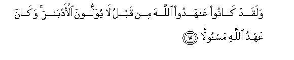

بسم الله الرحمن الرحيم
Sayyid Abul Ala Maududi - Tafhim al-Qur'an - The Meaning of the Qur'an
 33.
Surah Al Ahzab (The Clans)
33.
Surah Al Ahzab (The Clans)
The Surah derives its name Al-Ahzab from verse 20.
The Surah discusses three important events which are: the Battle of the Trench (or Al-Ahzab: the Clans), which took place in Shawwal, A. H. 5; the raid on Bani Quraizah, which was made in Dhil-Qa'dah, A. H. 5; and the Holy Prophet's marriage with Hadrat Zainab, which also was contracted in Dhil-Qa'dah, A. H. 5. These historical events accurately determine the period of the revelation of this Surah.
The Islamic army's setback in the Battle of Uhud (A. H. 3) that resulted from the error of the archers appointed by the Holy Prophet so boosted up the morale of the Arab pagans and the Jews and the hypocrites that they started entertaining the hope that they would soon be able to exterminate Islam and the Muslims completely. Their high state of morale can be judged from the events that occurred in the first year after Uhud. Hardly two months had passed then the tribe of Bani Asad of Najd began to make preparations for a raid on Madinah, and the Holy Prophet had to dispatch an expedition under Abu Salamah to counteract them. In Safar A. H. 4 some people of the tribes of Adal and Qarah asked the Holy Prophet to send some men to instruct them in Islam. Accordingly six of the Companions were allowed to accompany them for the purpose. But when they reached Raji (a place between Rabigh and Jeddah), they summoned Hudhail against them, who killed four of the Companions, and took the other two (Hadrat Khubaib bin Adi and Hadrat Zaid bin ad-Dathinnah) to Makkah and sold them to the enemy. Then in the same month of Safar, on the request of a chief of Bani Amir, the Holy Prophet sent another deputation of 40 (according to others, 70) preachers, consisting of the Ansar young men, to Najd. But they were also betrayed. The people of Usayyah and Ri'l and Dhakwan, tribes of Bani Sulaim, surrounded them suddenly at Bir Maunah and slew all of them. Meanwhile the Jewish tribe of Bani an-Nadir of Madinah, getting encouragement, continued to commit breaches of the treaties; so much so that in Rabi'ul Awwal, A.H. 4, they plotted against the life of the Holy Prophet himself. Then in Jamadi al-Ula, A. H. 4, Bani Thalbah and Bani Muharib, the two tribes of Bani Ghatafan, started making preparations to attack Madinah and the Holy Prophet had to go to punish them. Thus, after their setback at Uhud, the Muslims went on encountering repercussions continuously for seven to eight months.
However, it was the Holy Prophet's determination and wisdom and his great Companions' spirit of sacrifice that changed these adverse conditions completely within a short span of time. The economic boycott by the Arabs had made life hard for the people of Madinah. All the polytheistic tribes around Madinah were becoming rebellious. Inside Madinah itself the Jews and the hypocrites were beat upon mischief. But the successive steps taken by a handful of the sincere Muslims, under the leadership of the Holy Prophet, not only restored the image of strength of Islam in Arabia but also increased it manifold.
The first such step was taken immediately after the Battle of Uhud. The very next day when quite a large number of Muslims lay wounded and the martyrdom of the near and dear ones was being mourned in many houses, and the Holy Prophet himself was injured and sad at the martyrdom of his uncle, Hadrat Hamzah, he called out to the devoted servants of Islam to accompany him in pursuit of the pagans so as to deter them from returning and attacking Madinah again. The Holy Prophet's assessment was absolutely correct. He knew that, although the Quraish had retreated without taking any advantage of their almost complete victory, they would certainly regret their folly when they would halt and consider the whole matter coolly on the way, and would return to attack Madinah again. Therefore, he decided to go in pursuit of them, and 630 of of the Muslims at once volunteered to accompany him. When they reached Hamra al-Asad on the way to Makkah and camped there for three days, the Holy Prophet came to know through a sympathetic non- Muslim that Abu Sufyan had stayed at Ar-Rauha, 36 miles short of Madinah, with an army 2,978 strong: they were regretting their error and were, in fact, planning to return and attack Madinah once agaln. But when they heard that the Holy Prophet was coming in pursuit of them with an army, they lost heart and gave up their plan. Thus, not only were the Quraish deterred by this action but the other enemies living around Madinah also realized that the Muslims were being led by a person, who was highly well informed, wise and resolute, and that the Muslims were ever ready to lay down their lives at his command.(For further details, see Introduction to Surah Al-i-`Imran and E.N. 122 thereof).
Then as soon as the Bani Asad started making Preparations for a raid on Madinah, the Holy Prophet's secret agents gave him timely information about their intention. Thus, before they could come in force to attack Madinah, he sent an army 150 strong, under Hadrat Abu Salamah (the first husband of Hadrat Umm Salamah) to punish them. They took Bani Asad by surprise, who fled in panic leaving all their possessions behind, which fell into the Muslim hands.
After this came the turn of the Bani an-Nadir. The day they plotted against the life of the Holy Prophet, and the secret was disclosed, the Holy Prophet ordered them to leave Madinah within ten days and warned that anyone who remained behind after that would be put to death. Abdullah bin Ubayy, the chief of the hypocrites of Madinah, encouraged them to defy the order and refuse to leave Madinah. He even promised to help them with 2,000 men, and assured them that the Bani Ghatafan from Najd also would come to their aid. Accordingly, the Bani an- Nadir sent word that they would not leave no matter what the Holy Prophet might do.
As soon as the time limit of ten days come to an end, the Holy Prophet laid siege to their quarters, but none of their supporters had the courage to come to their rescue. At last, they surrendered on condition that every three of them would be allowed to load a camel with whatever they could carry and go away leaving the rest of their possessions behind. Thus, the whole suburbs of the city which were inhabited by the Bani an-Nadir, and their gardens and their fortresses and other properties fell to the Muslims, and the people of this treacherous tribe became scattered in Khyber, Wad il Qura and Syria.
Then the Holy Prophet turned his attention to the Bani Ghatafan, who were preparing for a war against Madinah. He took 400 of the Muslims and overtook them at Dhat ar-Riqa. They were so taken by surprise that they fled their houses without a struggle and took refuge in the mountains.
After this in Shaban A. H. 4, the Holy Prophet went forth to Badr to fight Abu Sufyan. At the end of the Battle of Uhud, he had challenged the Holy Prophet and the Muslims, saying, "We shall again meet you in combat at Badr next year." In reply the Holy Prophet announced through a Companion: "All right: we accept your challenge." Accordingly, at the appointed time he reached Badr with 1,500 of the Muslims. From the other side, Abu Sufyan left Makkah with an army of 2,000 men, but could not have the courage to march beyond Marr-az-Zahran (modern, Wadi Fatimah). The Holy Prophet waited for him at Badr for eight days; the Muslims during these days did profitable business with a trading party. This incident help- ed more than restore the image of strength of the Muslims that had been tarnished at Uhud. It also made the whole of Arabia realize that the Quraish alone could no longer resist Muhammad (upon whom be Allah's peace and blessings). (Please also refer to E.N. 124 of Al-i-`Imran).
This image and position of the Muslims was further strengthened by another event. Dumat al-Jandal (modern, Al-Jauf) was an important place at the border between Arabia and Syria. When the caravans of the Arabs, trading between Iraq in the south and Syria and Egypt in the north, passed that way, they were harassed and looted by the natives. In Rabi al- Awwal, A. H. 5, the Holy Prophet himself went to punish them with an army of 1,000 men. They could not muster up courage to come out and fight him and, therefore, fled the place. This caused the whole of northern Arabia to dread the power of Islam, and the tribes began to realize that the great power emerging from Al-Madinah was formidable and could no longer be resisted by one or a few of the tribes.
Such were the conditions when the Battle of the Trench took place. It was in fact a combined raid by many of the Arab tribes, who wanted to crush the power of Madinah. It had been instigated by the leaders of the Bani an-Nadir, who had settled in Khyber after their banishment from Madinah. They went round to the Quraish and Ghatafan and Hudhail and many other tribes and induced them to gather all their forces together and attack Madinah jointly. Thus, in Shawwal, A. H. 5, an unprecedentedly large army of the Arab tribes marched against the small city of Madinah. From the north came Jews of Bani an-Nadir and Bani Qainuqa who after their banishment from Madinah, had settled in Khaiber and Wad il Qura. From the east advanced the tribes of Ghatafan, Bani Sulaim, Fazarah, Murrah, Ashja, Sad, Asad, etc. and from the south the Quraish, along with a large force of their allies. Together they numbered from ten to twelve thousand men.
Had it been a sudden attack, it would have been disastrous. But the Holy Prophet was not unaware of this in Madinah. His intelligence men and the sympathizers of the Islamic movement and the people influenced by it were present in every tribe, who kept him informed of the enemy's movements. Even before the enemy could reach his city, he got a trench dug out on the north-west of Madinah in six days, and having the Mount Salat their back, took up a defensive position with 3,000 men in the protection of the Trench. To the south of Madinah there were many gardens (even now there are) so that it could not be attacked from that side. To the east there are lava rocks which are impassable for a large army. The same is the case with the south western side. The attack, therefore, could be made only from the eastern and western sides of the Uhud, which the Holy Prophet had secured by digging a trench. The disbelievers were not at all aware that they would have to counter the trench outside Madinah. This kind of a defensive stratagem was unknown to the Arabs. Thus, they had to lay a long siege in winter for which they had not come prepared.
After this, only one alternative remained with the disbelievers: to incite the Jewish tribe of Bani Quraizah, who inhabited the south eastern part of the city, to rebellion. As the Muslims had entered a treaty with them that in case of an attack on Madinah they would defend the city along with them, the Muslims had made no defensive arrangement there and had even sent their families to take shelter in the forts situated on that side. The invaders perceived this weakness of the Islamic defenses. They sent Huyayy bin Akhtab, the Jewish leader of the Bani an-Nadir, to the Bani Quraizah so as to induce them to break the treaty and join the war. In the beginning, they refused to oblige and said that they had a treaty with Muhammad (upon whom be Allah's peace) who had faithfully abided by it and given them no cause for complaint. But when Ibn Akhtab said to them, "Look, I have summoned the united force of entire Arabia against him: this is a perfect opportunity to get rid of him. If you lose it, you will never have another opportunity," the anti Islamic Jewish mind prevailed over every moral consideration and the Bani Quraizah were persuaded to break the treaty.
The Holy Prophet received news of this. He at once told Sad bin Ubadah, Sad bin Muadh, Abdullah bin Rawahah and Khawwat bin Jubair, chiefs of the Ansar, to go and find out the truth. He advised them that if they found Bani Quraizah still loyal to the treaty, they should return and say so openly before the Muslim army; however, if they found that they were bent upon treachery they should only inform him so that the common Muslims would not be disheartened. On reaching there the Companions found the Bani Quraizah fully bent on mischief They told the Companions openly, "There is no agreement and no treaty between us and Muhammad." At this they returned to the Islamic army and submitted their report to the Holy Prophet, saying, "'Adal and Qarah." That is, "The Quraizah are bent upon doing what the Adal and Qarah had done with the preachers of Islam at Raji."
This news spread among the Muslims and caused great consternation among them, for they had been encircled and their city had been endangered on the side where there existed no defensive arrangement and where they had also sent their families to take shelter in the forts. This further increased the activities of the hypocrites and they started making psychological attacks to break the morale of the Muslims. One said, "How strange! We were being foretold that the lands of Caesar and Chosroes would fall to us, but here we are that not one of us can go out even to relieve himself." Another one asked for permission to leave his post at the Trench so that he could go and protect his own house which was in danger. Another one started making secret propaganda to the effect: "Settle your affair with the invaders yourselves and hand over Muhammad to them." This was a highly critical hour of trial, which exposed every person who harbored any hypocrisy in his heart. Only the true and sincere Muslims remained firm and steadfast in their resolve and devotion.
In the meantime Nuaim bin Masud, a member of the Ashja branch of the Ghatafan tribe, became a Muslim and came before the Holy Prophet and submitted: "No one as yet knows that I have embraced Islam: You can take from me whatever service you please." The Holy Prophet replied: "Go and sow the seeds of discord among the enemy."' So, first of all, Nu'aim went to the Quraizah with whom he was on friendly terms, and said to them, "The Quraish and the Ghatafan can become wearied of the siege and go back, and they will lose nothing, but you have to live here with the Muslims. Just consider what will be your position if the matter turns that way. Therefore, I would advise you not to join the enemy until the outsiders should send some of their prominent men as hostages to you." This had the desired effect upon the Bani Quraizah and they decided to demand hostages from the united front of the tribes. Then he went to the chiefs of the Quraish and the Ghatafan and said to them, "The Bani Quraizah seem to be slack and irresolute. May be they demand some men as hostage from you, and then hand them over to Muhammad (upon whom be Allah's peace) to settle their affair with him. Therefore, be very firm and cautious in your dealing with them." This made the leaders of the united front suspicious of Bani Quraizah. and they sent them a message, saying, "We are tired of the long siege; let there be a decisive battle; let us, therefore, make a general assault simultaneously from both the sides." The Bani Quraizah sent back the word, saying, "We cannot afford to join the war unless you hand over some of your prominent men to us as hostages." The leaders of the united front became convinced that what Nuaim had said was true. They refused to send hostages. And the Bani Quraizah, on the other side, also felt that Nuaim had given them the correct counsel. Thus, the strategy worked: it divided the enemy against itself.
The siege was prolonged for more than 25 days. It was winter. The supply of food and water and forage was becoming more and more scarce everyday and division in the camp was also a great strain on the state of morale of the besiegers. Then, suddenly one night a severe windstorm accompanied by thunder and lightning hit the camp. It added to the cold and darkness. The wind overthrew the tents and put the enemy in disarray. They could not stand this severe blow of nature. They left the battleground even during the night and returned to their homes. When the Muslims awoke in the morning, there was not a single enemy soldier to be seen on the battlefield. The Holy Prophet, finding the battlefield completely empty, said: "The Quraish will never be able to attack you after this: now you will take the offensive." This was a correct assessment of the situation. Not only the Quraish but the united front of all the enemy tribes had made their final assault against Islam and had failed. Now they could no longer dare invade Madinah; now the Muslims were on the offensive.
When the Holy Prophet returned from the Trench, Gabriel came to him in the early afternoon with the Divine Command the the Muslims should not lay aside the arms yet but should deal with the Bani Quraizah as well. On receipt of this Command, the Holy Prophet got announced: "Everyone who is steadfast in obedience should not offer his Asr Prayer till he reaches the locality of the Bani Quraizah." Immediately after this, he dispatched Hadrat Ali with a contingent of soldiers as vanguard towards the Quraizah. When they reached there, the Jews climbed on to their roof tops and started hurling abuses on the Holy Prophet and the Muslims, but their invectives could not save them from the consequences of their treachery. They had committed breach of the treaty right at the most critical moment of the war, joined hands with the invaders and endangered the entire population of Madinah. When they saw the contingent of Hadrat Ali, they thought that they had come only to overawe them. But when the whole Islamic army arrived under the command of the Holy Prophet himself and laid siege to their quarters, they were very frightened. They could not stand the severity of the siege for more than two or three weeks. At last, they surrendered themselves to the Holy Prophet on the condition that they would accept whatever decision Hadrat Sad bin Muadh, the chief of the Aus, would give. They had accepted Hadrat Sad as their judge because in the pre-Islamic days the Aus and the Quraizah had been confederates and they hoped that in view of the past ties he would help them quit Madinah as had happened in the case of the Bani Qainuqa and the Bani an-Nadir before. The people of the Aus themselves wished that Hadrat Sad treat their previous allies leniently. But Hadrat Sad had just experienced and seen how the two Jewish tribes who had been allowed to leave Madinah previously had instigated the other tribes living around Madinah and summoned the united front of ten to twelve thousand men against the Muslims. He was also aware how treacherously this last Jewish tribe had behaved right on the occasion when the city was under attack from outside and threatened the safety of the whole of its population. Therefore, he decreed that all the male members of the Quraizah should be put to death, their women and children taken prisoners, and their properties distributed among the Muslims. The sentence was carried out duly. When the Muslims entered their strongholds they found that the treacherous people had collected 1,500 swords, 300 coats of mail, 2,000 spears and 1,500 shields in order to join the war. If Allah's succor had not reached the Muslims, all this military equipment would have been used to attack Madinah from the rear right at the time when the polytheists were making preparations for a general assault on the Muslims after crossing the Trench. After this disclosure there remained no doubt that the decision of Hadrat Sad concerning those people was absolutely correct.
Though the period of two years between the Battles of Uhud and the Trench was a period of disturbance and turmoil and the Holy Prophet and his Companions could hardly relax in peace and security even for a day, the work of reform as a whole and the reconstruction of the Muslim society continued uninterrupted. This was the time when the Islamic laws pertaining to marriage and divorce were complemented; the law of inheritance was introduced, drinking and gambling were prohibited, and the new laws and regulations concerning many other aspects of the economic and social life were enforced.
In this connection, an important thing that needed to be reformed was the question of the adoption of a son. Whoever was adopted by the Arabs as a son was regarded as one of their own offspring: he got share in inheritance; he was treated like a real son and real brother by the adopted mother and the adopted sister; he could not marry the daughter of his adopted father and his widow after his death. And the same was the case if the adopted son died or divorced a wife. The adopted father regarded the woman as his real daughter-in-law. This custom clashed in every detail with the laws of marriage and divorce and inheritance enjoined by Allah in Surahs Al-Baqarah and An-Nisa. It made a person who could get no share in inheritance entitled to it at the expense of those who were really entitled to it. It prohibited marriage between the men and the women who could contract marriage perfectly lawfully. And, above all, it helped spread the immoralities which the Islamic Law wanted to eradicate. For a real mother and a real sister and a real daughter cannot be like the adopted mother and the adopted sister and the adopted daughter, however one may try to sanctify the adopted relations as a custom. When the artificial relations endued with customary sanctity are allowed to mix freely like the real relations, it cannot but produce evil results. That is why the Islamic law of marriage and divorce, the law of inheritance and the law of the prohibition of adultery required that the concept and custom of regarding the adopted son as the real son should be eradicated completely.
This concept, however, could not be rooted out by merely passing a legal order, saying, The adopted son is not the real son. The centuries old prejudices and superstitions cannot be changed by mere word of mouth. Even if the people had accepted the command that these relations were not the real relations, they would still have looked upon marriage between the adopted mother and the adopted son, the adopted brother and the sister, the adopted father and the daughter, and the adopted father- in-law and the daughter-in- law odious and detestable. Moreover, there would still exist some freedom of mixing together freely. Therefore, it was inevitable that the custom should be eradicated practically, and through the Holy Prophet himself. For no Muslim could ever conceive that a thing done by the Holy Prophet himself, and done by him under Allah's Command, could be detestable. Therefore, a little before the Battle of the Trench, the Holy Prophet was inspired by Allah that he should marry the divorced wife of his adopted son, Zaid bin Harithah (may Allah be pleased with him), and he acted on this Command during the siege of the Bani Quraizah. (The delay probably was caused for the reason that the prescribed waiting period had not yet ended, and in the meantime the Holy Prophet had to become busy in the preparation for war).
As soon as the marriage was contracted, there arose a storm of propaganda against the Holy Prophet. The polytheists, the hypocrites and the Jews, all were burning with jealousy at his triumphs which followed one after the other. The way they had been humbled within two years after Uhud, in the Battle of the Trench, and in the affair of the Quraizah, had made them sore at heart. They had also lost hope that they could ever subdue him on the battlefield. Therefore, they seized the question of this marriage as a god send for themselves and thought they would put an end to his moral superiority, which was the real secret of his power and success. Therefore, stories were concocted that Muhammad, God forbid, had fallen in love with his daughter-in-law, and when the son had come to know of this, he divorced his wife, and the father married his daughter-in-law. The propaganda, however, was absurd on the face of it. Hadrat Zainab was the Holy Prophet's first cousin. He had known her from childhood to youth. So, there could be no question of his falling in love with her at first sight. Then he himself had arranged her marriage with Hadrat Zaid under his personal influence, although her whole family had opposed it. They did not like that a daughter of the noble Quraish should be given in marriage to a freed slave. Hadrat Zainab herself was not happy at this arrangement. But everyone had to submit to the Holy Prophet's command. The marriage was solemnized and a precedent was set in Arabia that Islam had raised a freed slave to the status of the Quraishite nobility. If the Holy Prophet had in reality any desire for Hadrat Zainab, there was no need of marrying her to Hadrat Zaid; he himself could have married her. But in spite of all this, the shameless opponents invented stories of love, spread them with great exaggeration and publicized them so vehemently that even some Muslims also began to accept them as true.
The fact that the tales invented by the enemies also became topics of conversation among the Muslims was a clear sign that the element of sensuality in society had crossed all limits. If this malady had not been there, it was not possible that minds would have paid any attention whatever to such absurd and disgusting stories about a righteous and pure person like the Holy Prophet. This was precisely the occasion when the reformative Commandments pertaining to the law of Hijab or Purdah were first enforced in the Islamic society. These reforms were introduced in this Surah and complemented a year later in Surah An-Nur, when a slander was made on the honor of Hadrat Aishah.(For further details, see Introduction to Surah An-Nur).
There were two other problems which needed attention at that time. Though apparently they pertained to the Holy Prophet's domestic life, it was necessary to resolve them for the domestic and mental peace of the person, who was exerting every effort to promote the cause of Allah's Religion and was day and night absorbed in this great mission. Therefore, Allah took these two problems also officially in His own hand.
The first problem was that economically the Holy Prophet at that time was in straitened circumstances. During the first four years he had no source of income whatever. In 4 A. H. after the banishment of the Bani an-Nadir, a portion of their evacuated lands was reserved for his use by the Command of Allah, but it was not enough for his family requirements. On the other hand, the duties of the office of Prophethood were so onerous that they were absorbing all his energies of the mind and body and heart and every moment of his time, and he could not make any effort at all for earning his livelihood. In conditions such as these when his wives happened to disturb his mental peace because of economic hardships he would feel doubly strained and taxed.
The other problem was that before marrying Hadrat Zainab, he had four wives already in the houses: Hadrat Saudah, Hadrat Aishah, Hadrat Hafsah, and Hadrat Umm Salamah. Hadrat Zainab was his fifth wife. At this the opponents raised the objection, and the Muslims also started entertaining doubts, that as for others it had been forbidden to keep more than four wives at a time, but how the Holy Prophet himself had taken a fifth wife also.
These were the questions that were engaging the attention of the Holy Prophet and the Muslims at the time Surah Al-Ahzab was revealed, and replies to the same form the subject matter of this Surah.
A perusal of the theme and the background shows that the Surah is not a single discourse which was sent down in one piece but it consists of several injunctions and commandments and discourses, which were sent down, one after the other, in connection with the important events of the time, and then were put together in one Surah. Its following parts stand out clearly distinguished from one another:
Verses 1-8 seem to have been sent down before the Battle of the Trench. Their perusal, keeping the historical background in view, shows that at the time of their revelation Hadrat Zaid had already divorced Hadrat Zainab. The Holy Prophet was feeling the necessity that the concepts and customs and superstitions of ignorance concerning the adoption of the son should be eradicated, and he was also feeling that the delicate and deep sentiments the people cherished about the adopted relations merely on emotional grounds would not be rooted out until he himself took the initiative to eradicate the custom practically. But at the same time he was hesitant and considering seriously that if he married the divorced wife of Hadrat Zaid then, the hypocrites and the Jews and the mushriks who were already bent on mischief would get a fresh excuse to start a propaganda campaign against Islam. This was the occasion of the revelation of vv. 1-8.
In verses 9-27 an appraisal has been made of the Battle of the Trench and the raid against the Bani Quraizah. This is a clear proof that these verses were sent down after these events.
The discourse contained in vv. 28-35 consists of two parts. In the first part, Allah has given a notice to the wives of the Holy Prophet, who were being impatient of the straitened circumstances, to the effect:"Choose between the world and its adornments, and Allah, His Prophet and the Hereafter. If you seek the former, you should say so openly: you will not be kept back in hardship even for a day, but will be sent off gracefully. And if you seek the latter, you should cooperate with Allah and His messenger and bear patiently." In the second part, initial steps were taken towards the social reforms whose need was being felt by the minds moulded in the Islamic pattern themselves. In this regard, reform was started from the house of the Holy Prophet himself and his wives were commanded to avoid behaving and conducting themselves in the ways of the pre Islamic days of ignorance, ,to remain in their houses with dignity, and to exercise great caution in their conversation with the other men. This was the beginning of the Commandments of Purdah.
Verses 36-48 deal with the Holy Prophet's marriage with Hadrat Zainab. In this section the opponents' objection about this marriage have been answered; the doubts that were being created in the minds of the Muslims have been removed; the Muslims have been acquainted with the Holy Prophet's position and status; and the Holy Prophet himself has been counseled to exercise patience on the false propaganda of the disbelievers and the hypocrites.
In verse 49 a clause of the law of divorce has been laid down. This is a unique verse which was sent down on some occasion probably in connection with the same events.
In verses 50-52 a special regulation of marriage has been laid down for the Holy Prophet, which points out that he is an exception to the several restrictions that have been imposed on the other Muslims in regard to marital life.
In verses 53-55 the second step was taken towards social reform. It consists of the following injunctions: Restriction on the other men to visit the houses of the Holy Prophet's wives; Islamic etiquette concerning visits and invitations; the law that only the near relatives could visit the holy wives in their houses; as for the other men, they could speak to or ask them a thing from behind a curtain; the injunction that the Holy Prophet's wives were forbidden for the Muslims like their mothers; and none could marry any of them after him.
In verses 56-57 warning was given to stop criticizing the Holy Prophet's marriage and his domestic life, and the believers instructed not to indulge in fault finding like the enemies of Islam, but to invoke the blessings of Allah for their Prophet; moreover, they were instructed that they should avoid falsely accusing one another even among themselves, not to speak of the person of the Prophet.
In verse 59 the third step for social reform was taken. All the Muslim women were commanded that they should come out well covered with the outer garments and covering their faces whenever they came out of their houses for a genuine need.
After this till the end of the Surah the hypocrites and other foolish and mean people have been rebuked for the propaganda that they were carrying on at that time against Islam and the Muslims.

In the name of Allah, the Compassionate, the Merciful.
[1-3] O Prophet,1 fear Allah and do not obey the disbelievers and the hypocrites; in fact, Allah alone is All-Knowing, All-Wise.2 Follow that which you are being inspired with from your Lord: Allah is aware of whatever you do.3 Have trust in Allah, for Allah alone is sufficient as a Guardian.4

[4-5] Allah has not put two hearts in a person's body,5 nor has He made those wives of yours whom you divorce by Zihar your mothers,6 nor has made your adopted sons your real sons.7 These are the things which you utter from your mouths, but Allah says that which is based on the reality and He alone guides to the Right Way. Call your adopted sons after their fathers' names: this is more just in the sight of Allah.8 And if you do not know who their fathers are, then they are your brothers in faith and your friends.9 There is no blame on you if you say something unintentionally, but you will surely be to blame for what you say with the intention of your hearts.10 Allah is Forgiving and Merciful.11
[6] Indeed, the Prophet is preferable for the believers to their own selves,12 and the Prophet's wives are their mothers.13 But, according to the Book of Allah, the blood relations have a greater right on one another than the other believers and the migrants. However, you may do any good (you wish) to your friends.14 This is written in the Divine Book.
[7-8] And (O Prophet,) remember the Covenant that We took from all the Prophets-from you as well as from Noah and Abraham and Moses and Jesus son of Mary. We took a solemn Covenant from all of theme15 so that (their Lord) may question the truthful about their truth;16 as for the disbelievers, He has indeed reserved a painful punishment for them.17
[9-11] O people18 who have believed! Remember the bounty of Allah, which He has (just now) shown you. When the hosts came down on you, We sent against them a violent wind and the armies which you could not see.19 Allah was watching all that you were doing. When the enemies came upon you from above and from below you?20 when eyes were petrified due to fear and the hearts leapt up to the throats, and you began to entertain all sorts of doubts about Allah, the believers then were thoroughly tested and severely shaken.21

[12-15] Remember the time when the hypocrites and all those whose hearts were diseased were openly saying that the promises Allah and His Prophet had made with them22 were nothing but a delusion; when a party of them said, "O people of Yathrib, you have no chance to stay, so go back,"23 when a section of them sought leave of the Prophet, saying, "Our homes are insecure,"24 whereas they were not insecure.25 in fact, they wished to flee (the battle front). If the enemies had made entry from all sides of the city, and these people had been urged to treachery,26 they would have committed it, and would have little hesitated .to become partners in it. They had indeed already made a pledge with Allah that they would not show their backs; and the pledge made with Allah had to be questioned.27
[16-17] O Prophet, say to them, "If you flee from death or slaughter, your flight will avail you nothing; after that you will enjoy life but for a little while only."28 Ask them, "Who can protect you from Allah if He intends harm for you? And who can prevent Him if He intends to show you mercy?" In fact, they cannot find a protector and helper against Allah.
[18-20] Allah knows very well those among you, who create hindrances (in the war efforts), who say to their brothers, "Come to us,"29 who take part in the fighting only to be counted in, who are ever reluctant to join you.30 When there is danger, they look towards you, their eyes rolling like the one who is fainting, being on the point of death. But when the danger is gone, they come out to greet you with their scissor-like sharp tongues in greed for gains.31 These people have not believed at all; so Allah has made all their works fruitless,32 and this is an easy thing for Allah.33 They think that the invading hosts are not yet gone, and if they should attack again they would (rather) wish to be in the desert among the Bedouins and seek information about you from there. However, even if they remained among you, they would take but little part in the fighting.

[21-24] There was indeed the best model for you in the Messenger of Allah,34 for every such person who looks forward to Allah and the Last Day, and remembers Allah much.35 And when the true believers (at that time)36 saw the invading hosts, they cried out, "This is what Allah and His Messenger had promised us: Allah and His Messenger were absolutely true."37 This increased them all the more in faith and resignation.38 There are among the believers those who have been true in their pledge to Allah: some one of them has fulfilled his vow, and some other is waiting for it,39 they have made no change in their attitude. (All this happened) so that Allah may reward the truthful for their truthfulness, and punish the hypocrites, or accept their repentance as He will. Indeed Allah is All-Forgiving, All-Merciful.
[25-27] Allah turned back the disbelievers: they retreated in their rage without gaining any advantage, and Allah was sufficient to fight on behalf of the believers: Allah is All-Powerful, All-Mighty. Allah brought down from their fortresses those of the people of the Book, who had joined forces with the invaders40 and created such terror in their hearts that some of them you are slaying today and some taking as prisoners. He made you heirs. of their land and their dwellings and their wealth and gave you that land which you had never trodden before. Allah is All-Powerful.
[28-29] O Prophet,41 say to your wives, "If you seek the world and its adornments, come, I shall give you of these and send you off in a good way. But if you seek Allah and His Messenger and the abode of the Hereafter, you should rest assured that Allah has prepared a great reward for those of you who do good."42
[30-31] Wives of the Prophet, whoever among you commits a manifest indecency, will be doubly punished.43 This is an easy thing for Allah.44 And whoever among you obeys Allah and His Prophet, and does good works, We shall doubly reward her,45 and for her We have prepared an honorable provision.
[32-34] Wives of the Prophet, you are not like the other women.46 If you are God fearing, do not talk in a soft voice lest the man of the diseased heart should cherish false hopes from you, but speak in an unaffected manner.47 Stay in your houses,48 and do not go about displaying your fineries as women used to do in the days of ignorance.49 Establish the Salat, pay the Zakat, and obey Allah and His Messenger. Allah only intends to remove uncleanliness from you, O people of the Prophet's household, and purify you completely.50 Remember the Revelations of Allah and the wise sayings which are recited in your houses.51 Surely, Allah is the Knower of everything52 and is All-Aware.
[35] Most surely53 the men and the women who have surrendered themselves to Allah;54 who are believing,55 obedient,56 truthful,57 and patient;58 who bow down before Allah,59 practice charity,60 observe the fasts,61 guard their private parts62 and remember Allah much.63 Allah has prepared for them forgiveness and a vast reward.64
[36] It65 does not behoove a believing man and a believing woman that when Allah and His Messenger have given their decision in a matter, they should exercise an option in that matter of theirs; and whoever disobeys Allah and His Prophet, has indeed strayed into manifest error.66
[37] O Prophet,67 remember the time when you were saying to the man,68 whom Allah as well as you had favored,"Keep your wife and fear Allah."69 You were at that time keeping hidden in your heart that which Allah intended to reveal: you were fearing the people, whereas Allah has a greater right that you should fear Him.70 So, when Zaid had fulfilled his desire of her,71 We married (the divorced woman) to you72 so that there remains no hindrance for the believers in regard to the wives of their adopted sons when they have fulfilled their desire of them.73 And Allah's Command had to be carried out.
[38-39] There is no harm for the Prophet to do a thing which Allah has " ordained for him.74 The same has been the Way of Allah with regard to all the Prophets who have gone before, and Allah's Command is an absolutely settled decree.75 (This is the Way of Allah for those) who convey His messages, who fear Him alone and fear none but One God: Allah is enough to take account.76
[40] (O people) Muhammad is not the father of any of your men, but he is the Messenger of Allah and the last of the Prophets and Allah is the Knower of everything.77
[41-44] O you who have believed, remember Allah much and glorify Him morning and evening.78 He it is Who blesses you, and His angels pray for His blessings for you, so that He may bring you out of darkness into light: He is very Kind to the believers.79 Their salutation on the day they meet Him will be "Peace",80 and Allah has prepared for them an honorable reward.
[45-48] O Prophet,81 We have sent you as a witness,82 a bearer of good news and a warner,83 an inviter to Allah by His leave84 and a luminous lamp. Give good news to those who have believed (in you) that there are great bounties in store for them from Allah, so do not yield to the disbelievers and the hypocrites, disregard their persecution and put your trust in Allah: for Allah is sufficient for being entrusted with all one's affairs.
[49] O you who have believed, when you marry the believing women, and then divorce them before you have touched them,85 they do not have to fulfill a waiting term, whose completion you may demand of them; so provide them with something and send them off gracefully.86
[50] O Prophet, We have made lawful to you those of your wives, whose dowers you have paid,87 and those women who come into your possession out of the slave girls granted by Allah, and the daughters of your paternal uncles and aunts, and of your maternal uncles and aunts, who have migrated with you, and the believing woman who gives herself to the Prophet if the Prophet may desire to marry her.88 This privilege is for you only, not for the other believers.89 We know what restrictions We have imposed on the other believers concerning their wives and slave girls. (You have been made an exception) so that there may be no hindrance to you;90 and Allah is All Forgiving, All Merciful.
[51-52] You are granted the option that you may keep aside any of your wives you please, and keep to yourself any of them you please, and call back any of them you had set aside: there is no blame on you in this regard. Thus, it is expected that their eyes will be cooled and they will not grieve, and they will all remain well satisfied with whatever you give them.91 Allah knows whatever is in your hearts, and Allah is All-Knowing, All-Forbearing.92 No other women are lawful to you after this, nor are you allowed to have other wives instead of them, even if their beauty may be very pleasing to you.93 You may, however, have slave-girls.94 Allah is Watchful over everything.
[53-54] O you who have believed, do not enter the houses of the Prophet without permission,95 nor stay watching for the meal time; but if you are invited to meals, do come,96 and when you have taken food, disperse. Do not engage in talk and discussion,97 for such behavior causes trouble to the Prophet but he is shy of saying anything, and Allah does not feel shy in telling the truth. If you have to ask the wives of the Prophet for something, ask for it from behind a curtain. This is a better way for the purity of your as well as their hearts.98 It is not at all permissible that you should trouble the Messenger of Allah,99 nor is it permissible that you should marry his wives after him.100 This is a grave offense in the sight of Allah. Whether you reveal something or conceal it, Allah has full knowledge of everything.101
[55] There is no blame on the wives of the Prophet that they are visited in their houses by their fathers, their sons, their brothers, their brothers' sons, their sisters' sons,102 their familiar women103 and their slaves.104 (O women,) you should avoid the disobedience of Allah, for Allah observes everything.105
[56] Indeed Allah and His angels send blessings on the Prophet.106 O you who have believed, you also should ask and send blessings and peace on him.107
[57-58] Allah has cursed in this world and in the Hereafter those who cause trouble to Allah and His Messenger, and has prepared for them a disgraceful punishment.108 And those who cause trouble to the believing men and women for no fault of theirs, have indeed born on their head the burden of a grave slander109 and a manifest sin.
[59] O Prophet, enjoin your wives and daughters and the women of the believers that they should let down over their faces a part of their outer-garments;110 it is expected that they will thus be recognized and not molested.111 Allah is Forgiving and Merciful.112
[60-62] If the hypocrites and those whose hearts are diseased113 and the scandal-mongers in Madinah114 do not desist, We shall stir you up to take action against them; then they will hardly be able to live in this city as your neighbors. They will be cursed from every side and will be seized wherever they are found and killed mercilessly. This has been the Way of Allah with regard to such people before, and you will never find any change in the Way of Allah.115
[63-68] The people ask you as to when will Resurrection take place.116 Say, "The knowledge of it is with Allah alone: you may not know that it may well be near at hand. In any case, it is certain that Allah has laid curse on the disbelievers and has prepared for them a blazing Fire, in which they will live for ever and will have no protector and helper. On, the Day their faces are rolled about on the Fire, they will say, "Would that we had obeyed Allah and His Messenger!" And (they) will say, "Our Lord, we obeyed our chiefs and our great men, and they led us astray from the right path. Lord, give them a double chastisement and curse them severely."117
[69-71] O you who have believed,118 do not be like those who had realigned Moses; then Allah cleared him of what they said of him, and he was honorable in the sight of Allah.119 O believers fear Allah and say the right thing: Allah will adorn your deeds and will overlook your errors Whoever obeys Allah and His Messenger, has indeed attained a great success.
[72-73] We offered this trust to the heavens and the earth and the mountains but they refused to bear it and were afraid of it, the but man undertook to bear it. Indeed, he is unjust and ignorant.120 (The inevitable result of bearing the burden of the trust is) that Allah should Punish the hypocritical men and women and mushrik men and women, and accept the repentance of the believing men and women: Allah is indeed Forgiving and Merciful.
1As we have mentioned in the introduction to the Surah, these verses were sent down at a time when Hadrat Zaid had already divorced Hadrat Zainab. , Then the Holy Prophet himself was feeling, and Allah also had inspired him with this, that that was the right time for striking at the root of the tradition and customs of ignorance regarding the adopted relations, and that he should take the initiative and marry the divorced wife of his adopted son (Zaid) so that the custom was completely eradicated. But the reason why he was hesitant in this regard was the fear that this would provide a strong excuse to the disbelievers and the hypocrites; who were already burning with jealousy at his successive victories, to start a propaganda campaign against him. This fear was not due to any apprehension for personal defamation, but for the reason that it would harm Islam; it would cause mistrust of Islam among the people who were inclined towards it; it would make the neutral people to join the enemy; and it would cause the weak-minded people among the Muslims themselves to be involved in doubts and suspicions. Therefore, the Holy Prophet thought it was unwise to take a step for the eradication of a custom of ignorance, which would harm the greater interests and objectives of Islam.
2In the first very sentence, in the beginning of the discourse, Allah removed all the apprehensions of the Holy Prophet, as if to say: "We know better what is useful and beneficial for ow Religion and what is not. We know what would be wise and what unwise in this regard. Therefore, you should not behave in a manner which would suit the disbelievers and the hypocrites, but you should behave in a manner which is according to Our W ill. You should fear Us and not the disbelievers and the hypocrites."
3This sentence is addressed to the Holy Prophet as well as to the Muslims and the opponents of Islam. It means : "If the Prophet earns defamation by acting according to the Command of Allah, and bears patiently the attacks of the enemy on his honor, his devoted and sincere services will not remain hidden from Allah. . The state of the Muslims who remain steadfast in their loyalty to the Prophet and of those who are involved in doubts and suspicions will be known to Allah. And Allah will also not remain unaware of the attempts of the disbelievers and the hypocrites who try to defame the Prophet."
4The addressee of this sentence is again the Holy Prophet. He is being instructed to the effect "Carry out the duty that is being entrusted to you with full confidence in Allah, and do not care at all even if the whole world turns hostile to you." When a man comes to know with certainty that a certain Command has been given by Allah, he should have the satisfaction that his whole well-being and his good lies in its compliance. Then, it is not for him to see and understand its wisdom, but he should carry it out with full confidence in Allah. Allah is enough for him that the servant should entrust all his affairs to Him. He is enough for his guidance as well as help, and He alone is also responsible that the one working under His guidance should never meet with evil consequences.
5That is, "One and the same person cannot be a believer and a hypocrite, truthful and false, wicked and righteous, at one and the same time. He does not have two hearts in this chest that one should have sincerity in it and the other fearlessness of God. Therefore, a man can have only one kind of character. at a time: either he will be a believer or a hypocrite, a disbeliever or a Muslim. Now if you call a believer a hypocrite, or a hypocrite a believer, it will not change the reality. The true character of the person will inevitably remain the same."
6Zihar is a term in Arabic. In old days when an Arab; in the heat of a domestic quarrel, would say to his wife: "Your back for me is as the back of my mother," it was thought that the woman was no longer lawful for him because he had compared her to his mother. About this Allah says: "A woman does not become a man's mother just because he has called her his mother or compared her to his mother. His mother is the woman who bore him. Only his Balling his wife his mother cannot change the reality." (For the Islamic Law concerning Zihar, see Surah Mujadalah: 2-a).
7This is what is intended to be said. The two preceding sentences are meant to support and emphasize this same point.
8The first reform introduced in connection with the implementation of this Command was that Zaid, the adopted son of the Holy Prophet, began to be .called Zaid bin Harithah, after his real father, instead of Zaid bin Muhammad. Bukhari, Muslim, Tirmidhi and Nasa'i have related this tradition from Hadrat 'Abdullah bin `Umar that in the beginning the people called Zaid bin Harithah Zaid bin Muhammad. After the revelation of this verse they began calling him Zaid bin Harithah. Moreover, after this Revelation it was forbidden that a person should assign his parentage to any other man than his own real father. Bukhari, Muslim and Abu Da'ud have related on the authority of Hadrat Sa'd bin Abi Waqqas that the Holy Prophet said: "Paradise is forbidden for the one who called himself son of another person than his own father. " Other traditions bearing on the subject have been related in Ahadith, which have regarded this as a heinous sin.
9That is, even in such a case it will not be right to ascribe the parentage of a person to someone else.
10It means: "There is no harm if a person is called a son out of love. Likewise, there is no sin if someone calls another one a mother, or a daughter, or sister or brother, etc. out of affection and regard, but if such a thing is said with the intention that the one being called so will be accorded the same status and position and rights and privileges as actually belong to these relations, it would certainly be objectionable and one will be held answerable for it. "
11That is, 'Allah has forgiven the errors already committed in this regard; no one will be called to account for them." Another meaning is: "Allah does not call a people to account for actions done unintentionally. He will not punish a person for doing something which he did not do intentionally although it resembled a forbidden act apparently."
12That is, "The relationship of the Holy Prophet with the Muslims and of the Muslims with the Holy Prophet is of a superior nature, over and above all human relationships. No other relationship is in any way comparable with the relationship that exists between the Holy Prophet and the believers. The Holy Prophet (may Allah's peace and blessings be upon him) is more compassionate and affectionate and a greater well-wisher of the Muslims than their own parents, even theft own selves. Their parents and their wives and children can harm them, can treat them in a selfish manner and mislead them, can make them commit errors and mistakes, can push them into Hell, but the Holy Prophet's cast is different: he will do for them only that which results in and leads to their eternal well-being and enduring happiness. They can commit follies resulting in their own ruin and disaster, but the Holy Prophet will wish for them only that which is beneficial and useful for them. And when it is so, the Holy Prophet also has a right on the Muslims that they should regard him dearer than their own parents, their own children, even their own selves. They should lout him more than anything and anybody else in the world; should prefer his judgment and opinion to their own and should submit to every command that he gives.
The same thing has been said by the Holy Prophet in a Hadith, which Bukhari and Muslim and others have related with a little difference in wording: "No one of you can be a believer until I become dearer to him than his own father and his own children and all mankind. "
13On the basis of the special relationship mentioned above, another characteristic of the Holy Prophet is that his wives are forbidden to the Muslims just like their own real mothers although their adopted mothers are in no sense their real mothers. This thing is peculiar only to the person of the Holy Prophet and of no other man in the world.
In this connection, one should also know that the wives of the Holy Prophet are mothers of the believers only in the sense that the Muslims are under obligation to have reverence and respect for them, and no Muslim could marry them. As for other matters they are not like the mothers. For example, apart from their real relatives, all other Muslims were non-mahram for them from whom they had to observe Purdah; their daughters were not like real sisters for the Muslims, so that no Muslim could marry them; their brothers and sisters were not like the maternal uncles and aunts for the Muslims; they could not be inherited by a Muslim, unless a close relative, as a mother is inherited by her son.
Another noteworthy point in this connection is that according to the Qur'an, this status accrues to all the wives of the Holy Prophet among whom Hadrat 'A'ishah is also included. But, when a section (of the Muslims) made Hadrat `AIi and Fatimah (may Allah be pleased with them) and their children the center of their Faith and made the whole system of religion revolve around them, and made Hadrat `A'ishah also, along with many other Companions, the target of curse and abuse, this verse became a hindrance for them, for according to it every person who claims to be a believer has to acknowledge her as his mother. Consequently, to overcome this difficulty a strange claim was made to the effect: The Holy Prophet had given Hadrat 'Ali the authority that after his death he could allow any of his wives he liked to retain her position of the holy wife and divorce any other on his behalf. Abu Mansur Ahmad bin Abu Talib Tabrasi has written this in Kitab al-Ihtijaj and Suleman bin `Abdullah al-Bahrani has related that the Holy Prophet said to Hadrat `Ali "O Abul Hasan: this honor will last till the time that we remain steadfast on obedience to Allah. Therefore, you may divorce any of my wives, who after me disobeys Allah by revolting against you, and deprive her of the honor that belongs to the mothers of the faithful. "
This is a false -tradition even according to the principles of reporting Hadith. But if one studies vv. 28-29 and 51-52 of this very Surah Al-Ahzab itself, one finds that this tradition goes against the Qur'an as well. For after the revelation of the "verse of the option" (v. 29), the Holy Prophet's right of divorce against those of his wives who chose to remain with him through every difficulty had been curtailed. For further explanation, see E.N.'s 42 and 93 below.
Moreover, if an unbiased person only uses his common sense and considers this tradition carefully, he will find that it is utterly absurd and highly derogatory in respect to the Holy Prophet. The rank and position of the Messenger of Allah is very high and exalted. It cannot even be expected of an ordinary man that he would think of divorcing his wife after his death and on leaving the world would authorize his son-in-law to divorce her on his behalf if there arose a dispute between him and her in the future. This shows what regard these sectarians have for the honor and reverence of the Holy Prophet himself; and even for the Divine Law.
14The verse means this: As for the' Holy Prophet the nature of the Muslims' relationship with him is unique. Hut as far as the common Muslims are concerned, their mutual relationship will be based on the principle that the rights of the relatives on one another are given priority over the rights of others. No charity is right if a person overlooks the needs and requirements of his own parents and children and brothers and sisters, and gives away charities to others: The Zakat money also will be used first of all to help one's own poor relatives and then the other needy people. The inheritance will necessarily be divided among those who are nearest in relation to the deceased. As for others, the dying person may give them a part of his wealth as a gift or by trust and will. But in no case is he allowed to deprive his rightful heirs and give away everything to others. After this Divine Command the system of "Brotherhood" that had been established between the Muhajirin and the Ansar after the Hijrah also became abolished, for according to it the Muhajirin and the Ansar became heirs to one another only on the basis of their relationship of being the brethren in faith. Allah enjoined the law that inheritance will be divided only on the basis of blood relationship; however, a person could help his brother-in-faith by making him a gift or through a will if he so liked.
15Allah in this verse has reminded the Holy Prophet that, like all other Prophets, He has taken from him too a solemn covenant which he should abide by strictly. A study of the preceding verse shows that the Covenant implies: "The Prophet will first himself obey and follow every Command received from Allah, and then make others also to obey and follow it: he will convey Allah's Commands intact to others and will show no laxity in the struggle to enforce them practically." This Covenant has been mentioned at several other places in the Quran, e.g.
(1)"He has appointed for you the same way of life whim he appointed for Noah and which (O Muhammad,) We have now revealed to you, and which We had already enjoined on Abraham and Moses and Jesus, stressing : `Establish this Way and be not divided in it." (Ash-Shura:13).
(2) "And remember that Allah had made the Covenant with the people who had been given the Scripture, and enjoined: `You shall spread the teachings of the Book among the people and shall not conceal them. " (Al`Imran: 187).
(3)"Remember that We made a solemn Covenant with the children of Israel to the effect: `Worship (and submit to) none save Allah." (AI-Baqarah: 83).
(4) "Has not the Covenant of the Book been taken from them.. .: `Hold fast the Book We have given you, and keep in mind what it contains: it is expected that you will refrain from wrong ways." (Al-A'raf: 169-171).
(5) "Keep in mind the blessing Allah has bestowed on you and do not forget the solemn Covenant which He made with you, when you said, `We have heard and submitted.' " (A1-Ma`idah: 7)
The reason why Allah is reminding of this Covenant in this context is that the Holy Prophet was feeling hesitant to break the custom of ignorance in respect of the adopted relations due to the apprehension that the enemies of Islam would put him to a disadvantage. He was feeling shy time and again at the thought: The question is of marrying a woman. I may take this initiative with the purest intention only for the sake of a social reform, but the enemies will certainly say that I have done so for the purpose of satisfying my sensual desires, and I am in fact trying to deceive others under the guise of a reformer. That is why Allah assures him, saying: "You arc a Prophet appointed by Us. Like all other Prophets, you also are bound in the Covenant that you will carry out whatever Command We give yourself and command others to follow it. Therefore, you should not bother at all about taunts and derision by others, do dot be afraid and fight shy of others, and carry out without hesitation the service that We want to take from you."
A section of the people think that this Covenant is the covenant that was taken from all the Prophets and their communities, who came before the Holy Prophet, to the effect that they would believe in the Prophet who came afterwards and cooperate with him. On the basis of this interpretation they claim that the door to Prophethood is still open after the Holy Prophet and this covenant has been taken from the Holy Prophet too, that his followers will believe in the prophet who will come after him. But the context in which the verse occurs is explicit that this interpretation is absolutely wrong, There is no occasion whatever in the context to indicate that other prophets will come also after the Holy Prophet and his followers should believe in them. If the verse is read in this sense, it becomes irrelevant and incoherent. Moreover, there is no indication in the words of the verse to show which covenant is implied here. Therefore, to find out the nature of the covenant, we shall have to turn to other verses of the Qur'an in which mention has been made of the covenants taken from the Prophets. Now, if only one sort of the covenants had been mentioned in the entire Qur'an, i.e., the covenant that the people shall believe in the prophets coming afterwards, it would be correct to think that here also the covenant implied the same covenant. But anyone who has studied the Qur'an with an open mind knows that it has mentioned many covenants, which were taken from the Prophets and their followers. Therefore, only that covenant from among the different covenant would be implied here, which fitted in with the context here, and not the one which was altogether irrelevant. Such wrong interpretations reveal the mentality of the people who wish to draw no guidance from the Qur'an but want to reinterpret it instead.
16That is, "Allah has not just taken the covenant but will also question as to how far it has been kept. Then only those who will have kept Allah's Covenant faithfully, will be declared to be the truthful. "
17To understand the theme of vv. 1-8 well these should be read together with vv. 36-41 of this Surah.
18In vv. 9-27 an appraisal has been made of the Battle of the Trench and the raid against the Bani Quraizah and were revealed at the end of the raid. One should keep the details of these events in view as given in the Introduction above.
19The windstorm did not lash the enemy hordes immediately on their arrival but it occurred when the siege of Madinah had lasted about a month. "Armies which you could not see" implies the hidden powers which operate in the affairs of men under Allah's Command and of which men are wholly unaware. Man regards the occurrence of events and incidents as resulting from apparent causes and does not take into account the hidden forces at work, whereas in most cases these very hidden forces play the decisive role. As these forces function under the Command of Allah's angels, the "armies" may imply the angels as well though there is no indication here of sending the armies of the angels.
20It may mean: "The enemies came upon you from every side, and also that those coming from Najd and Khaiber came from above and those coming from Makkah from below you."
21"The believers" : All those who accepted the Holy Prophet as Allah's Messenger and became included among his followers, which comprised both the true believers and the hypocrites. In this paragraph Allah has made mention of the Muslim community as a whole. In the following three paragraphs the attitude of the hypocrites has been commented upon, and the next two deal with the Holy Prophet and the true believers.
22That is, "Promises to the effect that the believers will get Allah's support and succor and will be helped to attain victory in the end. "
23This sentence has two meanings: The apparent meaning is that there is no chance for them to stay at the Trench against the polytheists; therefore, they should return to the city. And the hidden meaning is that there is no chance for them to remain in Islam; therefore, they should return to their ancestral religion, so that they might escape the danger in which they had involved themselves by earning the hostility of the whole of Arabia. The hypocrites uttered such mischievous things so that they could make the one who would listen to them understand the intended hidden meaning, but in case someone took exception to their words, they could say they had been misunderstood.
24That is, "When the Bani Quraizah also joined the invaders, the hypocrites had a good excuse for defection and they started asking the Holy Prophet for leave to go and protect their houses and families, which, they said, had been endangered, whereas at that time the Holy Prophet was responsible for the defense and protection of all the people of Madinah. After the treachery of the Quraizah it was for the Holy Prophet to devise plans for the protection of the city and its people and not of the soldiers of the army individually."
25That is, "The Holy Prophet had already made arrangements for protection against the danger, which were a part of the collective scheme of defense being implemented by him as Commander of the Islamic forces. Therefore, there was no immediate danger in the face of which these people could justifiably make such an excuse. "
26"Urged to treachery": Urged by the disbelievers to join them to vanquish the Muslims after entering the city as conquerors.
27That is, "They had felt regret at the weakness they had shown on the occasion of the Battle of Uhud and pledged to Allah that they would compensate for their error in any trial that they would confront in the future. But Allah cannot be deceived by empty words. He puts to one or the other test everyone who makes a pledge with Him so that his sincerity of intention or otherwise is found out. Therefore, just after two years of the Battle of Uhud, He made them confront an even more serious danger and discovered how far they were sincere in their pledge."
28That is, "This flight of yours will not add anything to your life. In no case will you live for ever and gain the whole wealth of the world. Hardly a few years will you live after your flight and enjoy life only as long as it is destined for you.
29That is, "Abandon this Prophet and do not become involved in dangers and afflictions only for the sake of the Faith and Truth. Live a life of ease and comfort as we do."
30"Who are ever reluctant...: "Who are not at all willing to spend their energies, their time, their wealth, etc. in any way in which the true believers are expending whatever they have. Not to speak of exerting themselves and braving the dangers, they do not want to cooperate with the believers in anything with an open heart. "
31Lexically, this verse has two meanings:
(1) "When you return victorious from a war, they receive you warmly, and try to impress you with a glib tongue that they too are sincere believers and they too have made their contribution to promote the cause of Islam, and therefore, they too deserve a share from the booty."
(2) "If victory is attained these people show great powers of the tongue at the time of the division of the spoils and make great demands for their shares, recounting their services to the cause of Islam."
32That is, "Allah will make null and void all the prayers that they offered, all the fasts that they observed, the Zakat that they paid, and other good works that they did after embracing Islam, and will give them no reward for these. For Allah does not judge actions and deeds according to their external form but on the basis of the faith and sincerity underlying them. When the actions are altogether devoid of this quality, there will be mere show and, therefore, meaningless. Here, one thing is especially noteworthy. A clear verdict has been given about the people who professed to believe in Allah and His Messenger, offered the Prayers, observed the fast, gave the Zakat and co-operated with the Muslims in other good works, to the effect that they did not believe at all. This verdict has been given because when they were put to the test during the conflict between Islam and un-Islam, they showed double-facedness, preferred selfish interests above the interests of the Faith, and shirked offering their selves and their wealth and their energies for the protection of Islam. This shows that the real criterion of the judgment are not the apparent deeds but the loyalties of man. If a person is not loyal to God and His Way, his profession of the Faith and his worship and other good deeds are worthless."
33That is, "As their deeds and actions do not carry any value, Allah renders them fruitless without the slightest hesitation; and as they do not have any power to resist Allah has no difficulty in destroying their deeds altogether."
34In view of the context in which this verse occurs, the object of presenting the Holy Prophet's conduct and way of life as a model was to teach a lesson to the people, who had been motivated by considerations of selfish interests and personal safety on the occasion of the Battle of the Trench. They are being addressed, as if to say: "You claimed to be the believers and Muslims and followers of the Holy Messenger. You should have seen how the Messenger whose followers you claimed to be conducted himself on the occasion. If the leader of a group is himself a seeker of personal security, is lazy and indolent, gives preference to personal interests to everything else, and is ever ready to flee danger, it would be reasonable to expect manifestation of such weakness from his followers. But here the case was different. The Holy Prophet endured along with others every toil and labor that he asked others to endure, and endured better than others; there was no trouble which others might have experienced and he himself did. not. He was among those who dug the trench, and endured hunger and other afflictions just as the common Muslims did. He did not leave the battlefront even for a moment during the siege nor retreated an inch. After the betrayal of the Bani Quraizah his own family had also been exposed to danger even as the families of the other Muslims were. He did not make any special arrangement for his own and his family's protection, which did not exist for others. He was always in the forefront to offer maximum sacrifices for the great objectives for which he was constantly asking others to make sacrifices. Therefore, whoever made a claim of being his follower should have followed the practical example set by the leader.
This is the meaning of the verse in the context here. But its words are general and there is no reason why it should be confined to these meanings only. Allah does not. say that only in this respect His Messenger's life is a model for the Muslims to follow, but has regarded it as a model absolutely. Therefore, the verse demands that the Muslims should take the Holy Prophet's life as a model for themselves in every affair of life and should mold their character and personality according to it.
35That is, "The Prophet's life is no model for the person who is forgetful of God, but it certainly is a model for him who remembers Allah much and consistently and not only occasionally just by chance. Likewise, this life is no model for him who has no hope from Allah and does not expect Resurrection to take place, but it is most surely a model for the person who is hopeful of Allah's grace and His favors, and who is also mindful that the Day of Judgment will come when his well-being will wholly depend on how closely his conduct resembled the conduct and character of the Messenger of Allah in this world. "
36After drawing attention to the model of the Holy Prophet, Allah now presents the model of his Companions so that the character of the false claimants to faith and of the sincere followers of the Messenger is clearly contrasted.
Although both were alike apparently in the affirmation of the faith, both were counted as Muslims, and both attended at the Prayers, they were separated from each other as soon as the time of the trial approached, and it became clear who were loyal to Allah and His Messenger and who were Muslims only in name.
37Here, one should keep verse 12 in view. There it was said that when the hypocrites and the people with diseased hearts found themselves surrounded by a huge force of ten to twelve thousand men from the front and by the Bani Quraizah from behind, they openly started saying: "The promises that Allah and His Messenger had made with us were nothing but a delusion. We were promised that if we believed in Allah's religion, His succor would be at our back and we would rule Arabia and the world outside and all the wealth of Caesar and Chosroes will be ours, but here we are that the whole of Arabia is bent upon exterminating us, and there is no sign yet of the armies of the angels in sight, who would save us and protect us against this grave calamity." Now they are being told: "One meaning of the promise of Allah and His Messenger was that which was understood by these false claimants to faith. The other meaning is that which is understood by the sincere and true Muslims. When they saw the storms of danger gathering, they too remembered the promises of Allah, but these promises did not mean that as soon as they affirmed the faith they would overwhelm and subdue the whole world without the slightest effort, and the angels would come to perform their coronation, but the promises actually meant that they would have to pass through severe trials, endure extreme hardships and afflictions, offer supreme sacrifices; then only will Allah bless them with His grace and they will be granted successes of the world and the Hereafter, which Allah has promised His believing servants.
"Do you think that you will enter Paradise without undergoing such trials as were experienced by the believers before you? They met with adversity and afflictions and were so shaken by trials that the Prophet of the time and his followers cried out: `When will Allah's help come?" - "Yes, Allah's help is near." (AI-Baqarah: 214).
"Do the people think that they will be left alone after they have once said, `We have believed', and they will not be tested ? The fact is that We have put to the test all those who have gone before them. Surely, Allah has to see who are the truthful and who the liars. " (AI-`Ankabut: 2-3).
38That is, "On seeing the hard, times of affliction approaching they did not waver in their faith but were strengthened in it all the mote, and instead of giving up Allah's obedience they became ready to resign and surrender to Him whatever they had with complete conviction and satisfaction of the heart. "
Here, one should fully understand that faith and resignation is indeed a quality of the self which is put to trial and test at every command and demand of the Faith. At every step in life man comes across situations where the Faith either enjoins something or forbids something, or requires one to make sacrifices of life and wealth and time and desires of the self. At every such occasion the faith and conviction of the person who deviates from obedience will suffer decline and the faith and conviction of him who submits to the command and demand will be strengthened and enhanced. Although in the beginning a man becomes a believer and Muslim only by embracing the fundamental creed (Kalimah) of Islam, yet his state of faith does not remain static but is open to both deterioration and development. Decline in sincerity and the spirit of obedience causes it to deteriorate; so much so that constant retrogression may cause the person to reach the last limits of the faith where the slightest move backward may turn him from a believer to a hypocrite. Contrary to this, the more sincere a person is, the more perfect his obedience and the greater his devotion and dedication to the cause of the true Faith, the stronger and more sound will he grow in faith and may even attain the supreme rank of the truthful. But this increase and decrease in the faith has only the moral significance which can be judged and reckoned by none but Allah. As for the man, faith is simply the act of affirmation by which a Muslim enters Islam and is regarded as a Muslim as long as he remains steadfast to it. In this regard we cannot say that so and so is half a Muslim, or one-third a Muslim, and another one double a Muslim or triple a Muslim. Likewise, in legal rights the Muslims are equal and alike. It cannot be that one is regarded a greater believer and given more rights and another one a lesser believer and given less rights. In these aspects there can be no question of the increase and decrease in the faith, and in fact, in this very sense has Imam Abu Hanifah said: "Faith in Islam neither increases nor decreases. "
39That is, "Someone has already offered his life in the way of Allah, and someone is awaiting the time when he will offer it for the sake of his Faith.
40That is, Jews of the Bani Quraizah.
41The verses from here to 35 were sent down in the period contiguous to the Battle of the Trench and the raid on Bani Quraizah, whose background we have touched upon in the Introduction to this Surah. According to a tradition related in Muslim on the authority of Hadrat Jabir bin `Abdullah, "One day when Hadrat Abu Bakr and Hadrat 'Umar visited the Holy Prophet, they saw that his wives were sitting around him and he was quiet. Addressing Hadrat `Umar, he said: `They are sitting around me as you see: they are asking for money for household expenditure'." At this both the Companions rebuked their daughters and said, "Why do you embarrass the Holy Prophet and demand from him that which he does not have." This event shows how hard pressed the Holy Prophet was economically at that time and how distressed and embarrassed he was feeling at his wives' demand for domestic expenditure during the period when a bitter conflict was going on between Islam and paganism.
42At the time when this verse was sent down, the Holy Prophct had four wives with him: Hadrat Saudah, Hadrat 'A'ishah, Hadrat Hafsah and Hadrat Umm Salamah. He had not yet married Hadrat Zainab. (Ibn `Arabia Ahkam ai-Qur an. Egyptian Edition, 1958, vol. III, pp. 512-13). When this verse was revealed, he first spoke to Hadrat 'A'ishah, and said: "I ask you a thing; do not be hasty in answering; consult your parents, then decide." Then he told her of Allah's Command and recited this verse. She replied: "Should I consult my parents about this?-I seek Allah and His Messenger and the Hereafter. After this he went to each of his wives and asked the same thing and each one gave the same reply as had been given by Hadrat `A'ishah. (Musnad Ahmad, Muslim, Nasa'i).
This is termed takhyir, i. e. to give the wife the option to decide for herself whether she would stay in wedlock or would separate from the husband. This was obligatory for the Holy Prophet because he had been commanded by Allah to offer such an option to his wives. If a lady from among the holy wives had opted to separate she would not have separated automatically but would have been separated by the Holy Prophet, as is clear from the words: " . . . I shall give you of these and send you off gracefully." But the Holy Prophet would certainly have separated her because as a Prophet it would not behoove him not to honor the word. After divorce apparently the lady would have stood excluded from the category of the holy wives, and she would not be forbidden to any other Muslim; for she would have chosen divorce from the Holy Prophet only for the sake of the world and its adornments of which she had been given the choice, and obviously the option could not be exercised in case she was forbidden to re-marry. On the other hand, the intention of the verse also seems that the Holy Prophet was not left with any authority to divorce the wives who chose Allah and His Messenger and the Hereafter in preference to the world. For takhyir had only two sides: if a wife opted for the world, she would be divorced; if she opted for Allah and His Messenger and the Hereafter, she would not be divorced. Obviously, if a lady chose one alternative, the other would become forbidden in her case by itself.
In Islamic Law takhyir. in fact, amounts to delegation of the right to obtain divorce. The husband himself gives the wife the choice to stay in wedlock with him or be separated. Here are briefly the injunctions which the jurists have derived from the Qur'an and Sunnah in this regard:
(1) Once a husband has given this choice to a wife, he can neither withdraw it nor stop her from exercising it. However, it is not necessary that the woman must exercise it. She may choose to remain in wedlock with the husband, or may prefer to separate, or may opt nothing and let the right of divorce be annulled.
(2) There are two conditions of this choice being transferred to the woman: (a) The husband should have given her the right of divorce in clear words, or if there was no clear mention of the divorce, he should have had the intention of giving this right; e.g. if he says, "You have the choice" or "your business is in your own hand," such indirect words will not transfer the right of divorce to the woman without the intention of the husband. If the woman claims it and the husband states on oath that he had no intention of giving the right of divorce, his statement will be admitted, unless the woman produces evidence to the effect that those words were said during a dispute, or in connection with divorce, because in that context delegation of the right would mean that the husband had the intention of giving the right of divorce. (b) The woman knows that she has been given the right of divorce. If she was absent, she should receive information of this, and if she is present, she should hear the words. Unless she hears the words, or receives the news, the right will not be transferred to her.
(3) As to the time limit within which the wife has to exercise her right if the husband gives it her absolutely without specifying any limit, there is a difference of opinion among the jurists. Some jurists have expressed the opinion that the woman can exercise the right at the same sitting at which the husband gave it her; if she leaves the place without making a response, or turns her attention to something else which indicates that she does not want to make a response, she forfeits the right invested in her and her choice no longer remains. This is the opinion of Hadrat `Umar, Hadrat `Uthman, Hadrat Ibn. Mas`ud, Hadrat Jabir bin `Abdullah, `Atta, Jabir bin Zaid, Mujahid, Sha'bi, Nakha`i, Imam Malik, Imam Abu Hanifah, Imam Shafe`i, Imam Auza`i, Sufyan Thauri `and Abu Thaur. The other opinion is that her exercise of the choice is not confined to that sitting but she can exercise it even afterwards. This opinion is held by Hadrat Hasan Basri, Qatadah and Zuhri.
(4) If the husband specifies a time limit and says, for instance, "You have the option for a month or a year, or your business is in your own hand for so long," the wife would enjoy the option only for that long. However, if he says, "You can exercise this option as and when you like," her option would be unlimited.
(5) If the woman intends to obtain separation, she should express her intention clearly and definitely. Vague words which do not express the intention clearly will have no effect.
(6) Legally, the husband can give the option to the waft in three forms: (a) He may say, "Your business is in your own hand;" or (b) he may say: "You have the option; " or (c) "You are divorced if you so please. " The legal consequences of each arc separate as explained below:
(a) If the husband has said: "Your business is in your own hand," and the woman responds clearly to the effect that she would opt for separation, it would amount to an irreversible divorce according to the Hanafites. That is, after this the husband will forfeit his right to have her back as his wife. However, they can remarry if they so like after the expiry of the waiting period. And if the husband said, "Your affair is in your own hand to the extent of one divorce," this will be regarded as the first reversible divorce. That is, the husband can take her back as his wife within the waiting-period. But if the husband had the intention of all the three divorces at the time of delegating to the woman the right of divorce, or mentioned this specifically, the woman's exercise of the option in such a case would amount to divorce no matter whether she pronounces divorce thrice on herself or says only once that she has chosen separation or divorced herself.
(b) If the husband gives the woman the option to separate with the words: "You have the option," and the woman opts for separation in clear words, it will amount to one reversible divorce according to the Hanafites even if the husband had the intention of giving option for three divorces. However, if the husband has clearly given option for three divorces, the three divorces will take place only on the woman's exercise of the option for divorce. According to Imam Shafe'i, if at the time of giving the option, the husband had the intention of divorce, and the woman opts for separation, it will amount to one reversible divorce. According to Imam Malik, it will amount to three divorces in case the wife had been enjoyed; in case she had not been enjoyed, the husband's claim to have intended only one divorce will be admitted.
(c) In case the words "You are divorced if you so please" have been used and the woman has opted for divorce, it will be a reversible divorce and not an irreversible one.
(7) If after the husband has given the option for separation, the woman chooses to remain in wedlock, no divorce will take place at all. This is the opinion of Hadrat 'Umar, Hadrat 'Abdullah bin Mas'ud, Hadrat 'A'ishah, Hadrat Abu ad-Darda, Ibn `Abbas and Ibn `Umar, and the same has been adopted by majority of the jurists. When Masruq asked Hadrat `A'ishah about this, she replied: "The Holy Prophet had given his wives the option and they chose to continue to live as his wives. Then, was it deemed to be a divorce?" The opinion of Hadrat `Ali and Zaid bin Thabit that has been reported in this regard is that one reversible divorce will take place. But according to another tradition these two great Companions also held the opinion that no divorce will take place at all.
43This does not mean that three was, God forbid, any chance of the Holy Prophet's wives committing an indecency, but this was meant to make them realize that they were the mothers of the Muslims; therefore, their responsibilities were accordingly very high, and so their moral conduct should be the purest. This is ,just like Allah's addressing the Holy Prophet to the effect: "If you committed shirk, all your works would be rendered vain." (Az-Zumar: 65). This also does not mean that there was, God forbid, any chance of the Holy Prophet's committing shirk, but this is meant to make the Holy Prophet realize, and through him the common Muslims, that shirk, is a most heinous crime which must be guarded against most judiciously.
44That is, "You should not be under the delusion that your being the Prophet's wives will protect you from Allah's punishment, or that it will be difficult for Allah to call you to account on account of your high rank and position in the world."
45The reason for giving a double punishment for a sin and a double reward for a good work is that those whom Allah honors with a high rank in society generally become the leaders of men and the majority of the people follow them for good or for evil. Thus, their evil does not remain their own evil but becomes the cause of a people's degeneration, and their goodness does not remain them own goodness but becomes the cause of the true success of many other people also. Therefore, when they commit evil they are punished for their own as well as for others degeneration, and when they do good they are not only rewarded for their own good works but also for this that they guided others also to do good.
This verse also gives the principle that the greater the degree of prohibition and trust in respect of somebody and something the greater and more serious will be the crime of violating that prohibition and trust and the greater will be the punishment for it. For example, drinking in the mosque is a much more serious crime than drinking privately in the house, and therefore, it will entail a severer punishment. Likewise, committing adultery with the prohibited relations is a far more serious crime than committing it with another woman, and therefore, will call for a severer punishment.
46The verses from here to the end of the paragraph are those with which the Commandments of Purdah were introduced in Islam. In these verses though the wives of the Holy Prophet only have been addressed, the intention is to enforce reforms in all the Muslim houses. The object of addressing the Holy Prophet's wives particularly is that when a pure way of life will start from his house, it will be followed by the women of all other Muslim houses as well, because this house was looked upon by the Muslims as a model to follow. Some people, when they see that these verses have been addressed only to the wives of the Holy Prophet, assert that these Commandments were only meant for them. But when one reads what follows in these verses one feels that there is nothing which might have been meant particularly for the holy wives and not for the other Muslim women. Could Allah have intended only this that the holy wives alone should be fret from uncleanliness and they alone should obey Allah and His Prophet and they alone should offer the Salat and pay the Zakat? If this could not be the intention, then how could the Command for them to stay in their houses and avoid displaying the fineries and abstain from talking to the other men in an alluring voice be meant particularly for them to the exclusion of all other Muslim women? Is there any rational proof on the basis of which some Commands in one and the same context and series be regarded as general and some others as particular and special?
As for the sentence, ¦You are not like the other women," it also does not mean that the other women should come out in full make-up and should talk to the other men coquettishly and flirt with them, but "as for you, you should not adopt such a conduct. " The style, to the contrary, is such as if a gentleman would tell his child, `You are not like the common children of the street: you should not use abusive language." From this no sensible person would ever conclude that the speaker regarded only his own child using abusive language as bad; as for others he would not mind if they used abusive language.
47That is, "There is no harm if the other man is spoken to in case of a genuine need, but on such an occasion the woman's tone and manner of speech should be such as does not let the other man think that he could cherish any false hope from her. There should be no undue softness in her tone, no allurement in her conversation, no consciously affected mellowness in her voice, which should excite the male hearer's emotions and encourage him to make advances.
About such a manner of speech Allah clearly says that this does not behoove a woman who has any fear of God in her heart and desire to avoid evil. In other words, this is the way and manner of the wicked and unchaste woman's speech and not of the believing pious woman's speech: If this verse is read together with verse 31 of Surah An-Nur, in which Allah says: "They should not stamp the ground in walking lest their hidden decoration is revealed," the intention of the Lord clearly seems to be that the women should not attract other men by their voice or the jingle of their ornaments unnecessarily and if at all they have to speak to the other men, they should speak to them in an un-affected tone and manner. That is why it is forbidden for the woman to pronounce the call to the Prayer. Moreover, if a woman is attending a congregational Prayer and the Imam commits a mistake, she is not permitted to say Subhan-Allah like the males but should only tap her hands to call the imam's attention to the error.
Now just consider this: When Islam disallows the woman to talk to other men in a soft and sweet tone and even forbids her to produce her voice before the other men without a genuine need, will it approve her to appear on the stage and sing, dance, flirt and behave coquettishly? Will it permit her to sing love songs over the radio and excite the people's emotions by presenting sweet melodies full of obscene themes? Will it permit that she should play the roles of the wives and sweet-hearts of others in dramas? Or that the women should be made the air hostesses and be especially trained to charm and allure the passengers? Or that they should visit clubs and attend social functions and gatherings in full make-up and mix freely with men and have fun and a good time with them? From which Qur'an has this culture been derived? For the Qur'an that was sent down by God there is to be found no hint as to the admissibility of this sort of culture.
48The word qarna in the original is derived from qarar according to some lexicographers and from waqar according to others. In the first sense, it will mean: `Settle down, stick firmly;" and in the second sense: "Live peacefully, sit with dignity." In both the cases the verse means to impress that the woman's real sphere of activity is her home; she should carry out her functions within that sphere peacefully, and she should come out of the house only in case of a genuine need. This meaning is clear from the words of the verse itself and the Holy Prophet's Ahadith also impress it even more forcefully. Hafiz Abu Bakr Bazzar has related on the authority of Hadrat Anas that the women made a submission to the Holy Prophet, saying: "All kinds of virtues have been secured by the men: they fight and accomplish great deeds in the way of Allah. What should we do that we may also get a reward equal to that of the warriors?" The Holy Prophet replied: The one who sits in her house from among you; will attain the reward of the warriors." What he meant was : The warrior can fight confidently and with full peace of the mind in the way of Allah only when he is sure that all is well at home: his wife is there to look after the house and the children, and there is no cause for him to worry that she will betray him in his absence. The woman who will provide him this satisfaction and peace of the mind will be an equal partner with him in his fighting though she will be sitting back at home. According to another tradition that Bazzar and Tirmidhi have related on the authority of Hadrat 'Abdullah bin Mas`ud, the Holy Prophet said: `The woman must remain veiled and concealed. When she comes out of her house, Satan stares at her. And she is closer to Allah's mercy when she is inside her house." (For further details, see E.N. 49 of Surah An-Nur).
In the presence of such a clear and express command of the Qur'an, it is not at all permissible that the Muslim women should seek membership of the councils and parliaments; that they should run after social activities outside the house; that they should work side by side with men in the government offices, should get education along with boys in the colleges, serve as nurses in the male wards of hospitals, should be employed as hostesses in the airplanes and rail cars, and should be sent abroad for education and training. The greatest argument that is given in support of the permissibility of the women's outdoor activities is that Hadrat 'A'ishah had taken part in the Battle of the Camel. But the people who present this argument perhaps do not know what was Hadrat `A'ishah's own opinion in this regard. `Abdullah bin Ahmad bin Hanbal has related in his Zawa id az-Zuhd and Ibn Mundhir, Ibn Abi Shaibah and Ibn Sa'd in their own books the tradition from Masruq, saying that when Hadrat `A'ishah during her recitation of the Qur'an would reach this verse (wa qarna fi buyut-i kunna), she would start crying involuntarily; so much so that her head-wrapper would become wet, for this reminded her of the error that she had committed in the Battle of the Camel.
49In this verse two important words have been used, which must be understood for the proper understanding of its intention. They are tabarruj and jahiliyyat al-ula.
The word tabarruj in Arabic means to become manifest and appear openly before others. The Arabs use the word baraj for every conspicuous and elevated object. A burj (tower) is so called because of its prominence and elevation. A sailing-boat is called barijah, because its sails become visible from a distance. The word tabarruj when used in respect of a woman will have three meanings: (1) that she should show the charms of her face and body before the people; (2) that she should display the adornments of her dress and ornaments before others; and (3) that she should make herself conspicuous by her gait and figure and coquetry. The same explanation of this word has been given by the leading lexicographers and commentators. Mujahid, Qatadah and Ibn Abi Nujaih say: "Tabarruj means to walk in a vain, alluring and coquettish manner." Muqatil says: ¦It means a woman's displaying of her necklaces, ear-rings and bosom. " AI-Mubarrad says: "That a woman should reveal her adornments which she should conceal. " Abu 'Ubaidah comments: "This that a woman should make herself conspicuous by display of her body and dress to attract the attention of men."
The word jahiliyyat has been used at three other places in the Quran besides this, in Al-i `Imran: 154, where about those who shirk fighting in the way of Allah, it has been said: ¦They began to cherish about Allah thoughts of Ignorance Uahiljyyat) which were void of the truth," and in Al-Ma`idah: 50, where about those who want to be judged by their own law instead of the law of Allah, it has been said: "Do they desire to be judged by the laws of ignorance (Jahiliyyat)?" and in Al-Fath: 26, where the prejudice of the people of Makkah due to which they did not permit the Muslims to perform 'Umrah, has been called as "the haughty spirit of paganism ( jahiliyyat). " According to a Hadith once Hadrat Abu ad-Darda' in the heat of a quarrel abused another person in respect of his mother. When the Holy Prophet heard of it, he remarked: "You still have jahiliyyat in you. " According to another Hadith the Holy Prophet said: "Three things show jahiliyyat to taunt the lineage of another person, to take omens from the movement of the stars, and to mourn over the dead. " All these customs show that jahiliyyat in the Islamic terminology is every such conduct which goes against Islamic culture and civilization and Islamic morality and etiquette and Islamic way of thinking and behavior. Thus, jahiliyyat al-ula would mean all those evils in which the Arabs of the pre-Islamic days and the people of the entire world were involved.
This explanation makes it abundantly clear that what Allah forbids women is to move out of their houses showing off their physical charms and beauty. He instructs them to stay in their houses because their real sphere of activity is their home and not the world outside. However, if they have to move out of the house for an cut-door duty, they should not move out as the women used to do in the pre-Islamic days of ignorance. For it does not behoove the women of a Muslim society to walk out fully embellished to make their face and figure conspicuous by adornments and tight-fitting or transparent dresses, and to walk coquettishly. These are the ways of ignorance which Islam does not approve. Now everybody can see for himself whether the culture which is being made popular in our country is the culture of Islam, according to the Qur'an, or the culture of ignorance.
50The context in which this verse occurs makes it manifest that the word ahl al-bait (people of the house) here implies the wives of the Holy Prophet (upon whom be Allah's peace), because the address begins with: "O wives of the Prophet," and they are the addressees in the whole discourse preceding it as well as following it. Moreover, the word ahl al-bait in Arabic is used precisely in the sense in which the word "household" is used in English, which includes both a man's wife and children. No one would exclude the wife from the "household." The Qur'an itself has used this word at two other places besides this, and at both the wife is included in its sense, rather as the most important member of the family. In Surah Hud, whcn the angels give the Prophet Abraham the good news of the birth of a son, his wife exclaims: "Shall I bear a child now when I have grown too old, and this husband of mine has also become old?" The angels say: What! Are you surprised at Allah's decree, O people of Abraham's household? Allah's mercy and blessings are upon you." In Surah Al-Qasas, whcn the Prophet Moses reaches the Pharaoh's house as a suckling, and the Pharaoh's wife is in search of a suitable nurse for the child, the Prophet Moses' sister says, "Shall I tell you of a household whose people will bring him up for you and look after him well?" Thus, the Arabic idiom and the usage of the Qur'an and the context of this verse, 'all point clearly to the fact that the Holy Prophet's wives as well as his children are included in his ahl al-bait; rather the more correct thing is that the verse is actually addressed to the wives and the children become included in the household only because of the sense of the word. That is why according to lbn 'Abbas and 'Urwah bin Zubair and `Ikrimah, the word ahl al-bait in this verse implies the wives of the Holy Prophet.
But if somebody says that the word ahl al-bait has been used only for the wives and none else can be included in it, it will also be wrong. Not only this that the word "household" includes all the members of a man's family, but the Holy Prophet has himself explained that this includes even himself. According to Ibn Abi Hatim, once when Hadrat `A'ishah was asked about Hadrat `Ali, she said, Do you ask me about the person who was among the most loved ones of the Holy Prophet and whose wife was the Holy Prophet's daughter and most beloved to him?" Then she related the event when the Holy Prophet had called Hadrat 'Ali and Fatimah and Hasan and Husain (may Allah be pleased with them all) and covered them all with a sheet of cloth and prayed: "O Allah, these are my household, remove uncleanness from them and make them pure." Hadrat 'A'ishah says, "I said: I also am included among your household (i.e. I may also be covered under the sheet and prayed for). " Thereupon the Holy Prophet replied" You stay out: you, . of course, are already included." A great many Ahadith bearing on this subject have been related by traditionalists like Muslim, Tirmidhi, Ahmad, Ibn Jarir, Hakim, Baihaqi, etc. on the authority of Abu Said Khudri, Hadrat 'A'ishah, Hadrat Anas, Hadrat Umm Salamah, Hadrat Wathilah bin Aqsa' and some other Companions, which show that the Holy Prophet declared Hadrat 'AIi and Fatimah and their two sons as his ahl al-bait. Therefore, the view of those who exclude them from the ahl al-bait is not correct.
Similarly the view of those people also is not correct, who, on the basis of the above-cited Ahadith, regard the wives of the Holy Prophet as excluded from his ahl al-bait. In the first place, anything which has been clearly stated in the Quran cannot be contradicted on the basis of a Hadith. Secondly, these Ahadith also do not have the meaning that is put on them. As related in some traditions that the Holy Prophet did not cover Hadrat 'A'ishah and Hadrat Umm Salamah under the sheet of cloth which he put on the four members of his family, dces not mean that he had excluded those ladies from his "household." But it means that the wives were already included in ahl al-bait, because the Qur'an, in fact, had addressed them as ahl al-bait. The Holy Prophet, however, thought that the apparent words of the Qur'an might cause somebody the misunderstanding about these members that they were excluded from the ahl al-bait. Therefore, he felt the need for clarification in their case and not in the case of his wives.
A section of the people have not only misconstrued this verse to the extent that they have made the word ahl al-bait exclusively applicable to Hadrat `AIi and Fatimah and their children to the exclusion of the holy wives, but have gone even further and concluded wrongly from its words "Allah only intends to remove uncleanliness from you and purify you completely", that Hadrat 'Ali and Fatimah and their children are infallible like the Prophets of Allah. They say that "uncleanliness" implies error and sin, and, as Allah says, these ahl al-bait have been purified of this, whereas the words of the verse do not say that uncleanliness has been removed from them and they have been purified. But the words are to the effect: "Allah intends to remove uncleanliness from you and purify you completely. " The context also does not tell that the object here is to mention the virtues and excellences of the Holy Prophet's household. On the contrary, they have been advised here what they should do and what they should not, because Allah intends to purify them. In other words, they have been told that if they adopted such and such an attitude and way of life, they will be blessed with cleanliness, otherwise not. However, if the words "Allah intends to remove uncleanliness from yon . . . " are taken to mean that Allah has made them infallible, then is no reason why all the Muslims who perform their ablutions before offering the Prayer are not held as infallible, because about them also Allah says: "But Allah wills to purify you and complete His blessings upon you." (Al-Ma'idah: 6)
51The word wadhkurna in the original has two meanings: Remember and mention. According to the first meaning the verse would mean: "O wives of the Prophet, you should never forget that yours is the house from where the would is being instructed in Divine Revelations and Wisdom; therefore, your responsibility is very great. Let it not happen that the people might see specimens of ignorance in this very house." According to the second meaning, it would mean: "O wives of the Prophet, you should mention and relate before the people whatever you hear and see, for by virtue of your close and constant social association and attachment with the Prophet you will know and experience many such things which the other people. will not be able to know by any other means than you. "
Two things have been mentioned in this verse: (1) The Revelations of Allah; and (2) the wise sayings. The revelations of Allah are the verses of Allah's Book, but hikmat (wisdom) is a comprehensive word which includes all those wise things which the Holy Prophet taught the people. This word may also imply the teachings of the Book of Allah, but there is no reason why it should be made exclusively applicable to them. It inevitably includes the wisdom that the Holy Prophet taught by his pure character and by his sayings besides reciting the verses of the Qur'an. Some people, only on the basis that the word ma yutla (that which is recited) has been used in the verse, make the assertion that the "Revelations of Allah" and "Wisdom" imply only the Qur'an, for the word "recitation" as a term is specifically used for the recitation of the Qur'an. But this reasoning is absolutely wrong. The use of the word "recitation" specifically as a term for the recitation of the Qur'an or the Book of Allah is the work of the people of the later ages. The Qur'an has not used this word as a term. In Surah AI-Baqarah: 102, this same word has been used for the incantation of the magical formulas which the satans falsely attributed to the Prophet Solomon and taught the people. ("They followed that which the satans recited attributing it to the kingdom of Solomon. ") This shows that the Qur'an uses this word in its lexical meaning, and does not specify it for reciting the verses of the Book of Allah.
52"Knower of everything" : Knower of even the most secret and hidden things."
53Presentation of this theme immediately after the foregoing paragraph contains a subtle allusion to the fact that the -instructions given above to the Holy Prophet's wives are not exclusively meant for them but the Muslim society as a whole should reform itself in accordance with them.
54"Who have surrendered themselves to Allah : Who have accepted Islam as a code of life for themselves, and have decided to follow it in their lives, and who have no wish to resist the Islamic way of life and thought, but have adopted the way of obedience and submission to it.
55"Who are believing": Whose obedience is not merely outward nor unwilling but who sincerely regard the guidance given by Islam as based on the truth whose faith is that the way shown by the Qur'an and the Holy Prophet Muhammad (upon whom be Allah's peace and blessings) is the only right and straight way in following which alone lies their true success. That which has been declared as wrong by Allah and His Prophet is certainly wrong even according to their judgment and that which has been declared as right by Allah and His Prophet is certainly right even according to their thinking and sense. Psychologically and intellectually also they do not regard as improper any injunction that has been enjoined by the Qur'an and Sunnah, and do not remain on the lookout to change it somehow to suit their own desire or mold it according to the current trends of the world, avoiding at the same time the blame that they have effected a change in the Command given by Allah and His Prophet. The Holy Prophet has described the true state of faith in a Hadith in these words:
"He who reconciled himself to Allah as his Lord and to Islam as his Way of Life and to Muhammad as his Messenger, has the true taste of Faith." (Muslim)
In another Hadith, he has explained it thus:
"None of you becomes a believer until the desires of his self become subordinate to what I have brought." (Sharh as-Sunnah)
56That is, "They do not rest content with mere belief but are obedient practically also. They are not the sort of the people who would honestly believe that what Allah and His Messenger have commanded was true but would violate it in practice: that they would sincerely regard what Allah and His Messenger have forbidden as bad but would go on following the same in practical life."
57That is, "They are truthful in their speech and honest in thou dealings. They do not deal in lies, deceptions, frauds and forgeries. They utter with their tongues only what their conscience approves as true. They practice and perform only what they honestly find to be in accordance with righteousness and truth, and they are honest in all their dealings with others."
58That is, "They patiently and steadfastly bear and face all the obstacles, dangers, difficulties and losses that they might have to encounter in following the right way taught by Allah and His Messenger and in establishing Allah's Religion in the world; no fear and no temptation and no lust of the self can succeed in diverting them from the right way."
59That is, "They are free from pride, vanity and haughtiness: they have full understanding of the reality that they arc servants and they have no other position than that of servitude. Therefore, their hearts as well as their bodies remain bowed before Allah, dominated by fear of Him. They never display the attitude which is the hall-mark of the lives of those who are fearless of God and arc involved in arrogance. " From the sequence it appears that the mention of Khushu' (expression of humility) in particular along with the general attitude of the fear of God implies the Prayer, for the mention of the practice of charity and fast has been made just after it.
60This does not only imply payment of the obligatory Zakat, but it also includes general charity. It means to say that they spend their wealth freely in the way of Allah and they are not at all niggardly in the matter of helping the servants of Allah as much as they can. No orphan and no sick or afflicted person, no weak or disabled person, no poor and needy one remains deprived of their support in their dwelling; and if there arises the need for monetary help for promoting the cause of Allah's Religion, they arc never miserly in expending their wealth for that purpose.
61This includes both the obligatory and the voluntary fasts.
62This has two meanings: (1) They refrain from adultery; and (2) they avoid nudity. One should also note that nudity does not only mean being naked but it is also nudity to put on a thin dress which shows the body, or is so tight-fitting that it reveals all the outlines of the body.
63"Remember Allah much" means that one should mention Allah's name in one way or other at all times in every business of life. Man cannot develop such a state of the mind unless the thought of God becomes deeply embedded in his heart. When this idea has passed beyond his conscious mind and settled deep in his subconscious and unconscious mind, then only he will remember and mention God's name in whatever he does and in whatever he says. He will begin with bismillah when he eats and say al-hamdu lillah when he finishes; he will remember Allah when he goes to bed, and mention Allah's name when he gets up. In his conversation also he will again and again pronounce bismillah, al-hamdu-lillalh, insha-Allah, ma sha Allah, etc. and ask for Allah's help in every matter, and thank Him for every blessing. He will seek His mercy in every affliction, and turn to Him in every trouble. He will fear Him on encountering every evil, and ask for His forgiveness when he happens to have committed an error and will pray to Him for fulfillment of every need. In short, in every state and in every business of life his function will be to remember Allah.
This. In fact, is the essence of the Islamic life. For all other acts of worship there is a prescribed time when they are performed, and one is free when one has performed them. But this is the worship which has no special time; it has to be performed constantly so that it links up the man's life with Allah and His service permanently. The other worships and religious acts themselves also become meaningful only when the heart of man remains inclined to Allah not only at the time when the act is actually being carried out but at all times when the tongue is uttering Allah's name constantly. In such a state as this worship and religious acts develop and flourish in a man's life precisely in the same manner as a plant grows in a congenial climate and environment. Contrary to this, the example of the religious services and worships which are carried out only on special times and occasions in the life which is devoid of this constant remembrance of Allah is of the plant which has been planted in an un-congenial climate, and which is growing only due to the special attention and care of the gardener. This very thing has been explained by the Holy Prophet in a Hadith, thus:
"Mu'adh bin Anas Juhani relates that a person asked the Holy Prophet of Allah. who among those who fight in the way of Allah will get the highest reward? He replied: The one who remembers Allah the most. The man asked: Who among the observers of the fast will get the highest reward? He replied: The one who remembers Allah the most. The man then asked the same question about the offerer of the Prayer, the payer of the Zakat and charities and the performer of Hajj and the Holy Prophet in every case gave the same answer, saying: He who remembers Allah the most." (Musnad Ahmad)
64This verse plainly tells what qualities and characteristics are of real worth in the sight of Allah. These are the basic values of Islam which have been compressed into one sentence. As regards these, there is no difference between the man and woman. However, as for their life-activity, the two sexes have separate spheres to function. The males have to function in some particular spheres and the females in some others. But if they possess these qualities and characteristics equally, Allah will raise them to equal ranks and bless them with equal rewards. It will in no way affect their rank and reward if one carried out household chores and the other performed the duties of caliphate and enforced the Shari'ah injunctions; one reared children in the house and the other went to the battlefield and fought for the sake of Allah and His religion.
65From here begin the verses which were sent down in connection with the Holy Prophet's marriage with Hadrat Zainab.
66Ibn 'Abbas, Qatadah, 'Ikrimah and Muqatil bin Hayyan say that this verse was sent down at the time when the Holy Prophet proposed Hadrat Zainab for Hadrat Zaid, and Zainab and her relatives did not agree. According to Ibn 'Abbas, when the Holy Prophet made the proposal, Hadrat Zainab said, "I am better than him in lineage." Ibn Sa'd says that she also said, "I do not approve him for myself. I am a Quraishite by birth. " The same sort of disapproval was expressed by her brother, 'Abdullah bin Jahsh, because Hadrat Zaid was a freed slave of the Holy Prophet and Hadrat Zainab was the daughter of his paternal aunt, Umaimah bint 'Abdul Muttalib. They did not like the Holy Prophet to propose a girl of a noble Quraishite family, who was none other than his own first cousin, for his freed slave. At this, this verse was sent down and on hearing it Hadrat Zainab and all her relatives yielded to the proposal at once. Then the Holy Prophet married them, paid ten diners and 60 dirhams from his own pocket as dower on behalf of Zaid, provided the bridal dress and sent some articles of food for domestic use.
Though this verse was sent down on g special occasion, the injunction given in it is the cardinal principle of the constitutional law of Islam, and it applies to the entire Islamic system of life. According to it no Muslim individual or nation, or institution, or court or parliament or state, is entitled to use its own freedom of opinion in a matter in which Allah and His Prophet have already given a decision. To be a Muslim means to surrender one's freedom of opinion and action before Allah and His Messenger. It would be a contradiction in terms if a person or a nation claimed to be Muslim and then reserved for itself the freedom of choice and action. No sensible person can think of combining the two contradictory attitudes together. The one who desires to remain a Muslim will inevitably have to bow down to the Command of Allah and His Prophet, and the one who is not inclined to bow will have to admit that he is not a Muslim. If he does not admit he will be regarded as a hypocrite both by God and by the people even though he might proclaim to be a Muslim at the top of his voice.
67The discourse from here to verse 48 was sent down after the Holy Prophet had married Hadrat Zainab, and the hypocrites, the Jews and the mushriks had started a relentless propaganda campaign against him. While studying these verses one should bear in mind the fact that this Divine discourse was not meant for the instruction of the enemies who were engaged. in a willful campaign of vilification and slander and falsehood to defame the Holy Prophet intentionally and to satisfy their rancor. But its real object was to protect the Muslims against the influence of their campaign and to safeguard them against doubts and suspicions. Evidently, the Word of Allah could not satisfy the unbelievers. It could give peace of mind only to those who knew and believed it to be Allah's Word. There was a danger that those righteous people also might be confused and influenced by the objections that were being raised by their enemies. Therefore, on the one hand, Allah removed all possible doubts from their minds, and on the other, taught the Muslims as well as the Holy Prophet himself how they should conduct themselves under the circumstances.
68It refers to Hadrat Zaid as has been mentioned clearly below. In order to understand how Allah had favored him and how the Holy Prophet, it is necessary here to relate his story briefly. He was the son of Harithah bin Shurahbil, a person of the Kalb tribe, and his mother, Su'da bint Tha'labah, was from the Bani Ma'n, a branch of the Tay tribe. When he was eight years old, she took him along to her parents. There the people of Bani Qain bin Jasr raided their camp, plundered their good: and took some men prisoners, Hadrat Zaid included. Then they sold Zaid at the fair of 'Ukiiz near Ta'if. His buyer was Hakim bin Hizam, a nephew of Hadrat Khadijah. Hakim brought him to Makkah and presented him to his paternal aunt. When the Holy Prophet married Hadrat Khadijah he found Zaid in her service and was so impressed by his good manners and conduct that he asked him of her. Thus, this fortunate boy entered the service of the best of men, whom Allah, after a few years, was going to appoint a Prophet. Hadrat Zaid at that time was 15 years old. Afterwards when his father and uncle came to know that their child was at Makkah, they came to the Holy Prophet and requested him to return him in exchange for ransom. The Holy Prophet said, "I shall call the boy and leave it to him whether he would like to go with you or stay with me. If he chose to go, I would take no ransom but would Iet Trim go with you. However, if he chose to stay back, I am not the one who would turn out a person who would like to stay with me." They said, "This is perfectly right and just. Please ask the boy." The Holy Prophet called Zaid and asked him, Do you know these two gentlemen?" He said, "Yes sir, this is my father and this my uncle." The Holy Prophet then said, "Well, you know them as well as me. You have the choice to go with them, or stay with me if you so desire. " He said, "I have no wish to leave you and go with anyone else. " His father and uncle said, I 'Zaid, will you prefer slavery to freedom, and choose to stay with others in preference to your parents and family?" He replied, "After what I have seen of this person I cannot now prefer anything else of the world to him." Hearing the reply the father and uncle of Zaid were reconciled to his remaining with the Holy Prophet. The Holy Prophet set Zaid free immediately and proclaimed before a gathering of the Quraish in the Ka'bah, "Bear witness that hence-forth Zaid is my son: he will receive inheritance from me and I from him." Thereafter, he began to be called Zaid bin Muhammad by the people. All this happened before the Holy Prophet's advent as a Prophet. Then, when he was blessed with Prophethood by Allah, there were four persons who accepted his claim to it without a moment's hesitation as soon as they heard of it from him. They were Hadrat Khadijah, Hadrat Zaid, Hadrat 'AIi and Hadrat Abu Bakr. Hadrat Zaid was 30 years old then, and had already spent 15 years in the Holy Prophet's service. In the fourth year after Hijrah, the Holy Prophet marred him to his first cousin Hadrat Zainab, paid her dower on his behalf and provided them with necessary articles for setting up the house.
This is to what Allah has alluded in the verse, saying: "Whom Allah as well as you had favored. "
69These words were said when the relations between Hadrat Zaid and Hadrat Zainab had become very strained, and after making repeated complaints Hadrat Zaid had finally told the Holy Prophet that he intended to divorce her. Although Hadrat Zainab had accepted to be married to him in obedience to Allah and His Messenger's command, she could not overcome her feeling that Zaid was a freed slave, who had been brought up by her own family, and she in spite of being the daughter of a noble Arab family, had been wedded to him. Due to this feeling she could never regard Hadrat Zaid as her equal in matrimonial lift, and this caused more and more bitterness between them. Thus after a little more than a year the marriage ended in divorce.
70Some people have misconstrued this sentence to mean this: The Holy Prophet desired to marry Hadrat Zainab and wanted that Zaid should divorce her. But when Zaid came to the Holy Prophet and said that he wanted to divorce his wife, the Holy Prophet stopped him from this only half-heartedly. At this Allaln said: 'You were keeping hidden in your heart that which Allah intended to reveal. The real meaning, however, is contrary to this. If this the sentence is read with verses 1, 2, 3 and 7 of this Surah, one can clearly see that in the very days when bitterness was increasing between Hadrat Zaid and his wife, Allah had hinted to His Prophet that when Zaid had divorced his wife, he would have to marry the divorced lady. But since the Holy Prophet knew what it meant to marry the divorced wife of the adopted son in the contemporary Arab society, and that too at a time when apart from a handful of the Muslims the entire country had become jealous of him, he was hesitant to take any step in that direction. That is why when Hadrat Zaid expressed his intention to divorce his wife, the Holy Prophet said to him, `Fear Allah and do not divorce your wife." What he meant by this was that Zaid should not divorce his wife so that he was saved from facing the trial, otherwise in case the divorce was pronounced he would have to comply with the command, and thus provoke a severe storm of criticism and vilification against himself. But when the Holy Prophet deliberately forbade Zaid to divorce his wife so that he himself might be saved from what he feared would cause him defamation, Allah found this below the high position that He wanted His Prophet to enjoy, whereas Allah intended to effect a great reform through this marriage of the Prophet. The words 'You were fearing the people, whereas Allah has a greater right that you should fear Him," clearly point to the same theme.
The same explanation of this verse has been given by Imam Zain-ul-'Abedin Hadrat 'AIi bin Husain (may Allah be pleased with him). He says, Allah had indicated to His Prophet that Zainab would be included among his wives. But when Zaid complained about her to him, the Holy Prophet admonished him to fear Allah and keep his wife. At this Allah said to His Prophet, 'I had informed you that I would marry you to Zainab. But when you were forbidding Zaid to divorce his wife, you were hiding that which Allah was going to reveal'." (Ibn Jarir, Ibn Kathir on the authority of Ibn Abi Hatim).
'Allama Alusi also in his Ruh al-Ma ani has given the same meaning of it. He says, 'This is an expression of displeasure on abandoning the better course, which was that the Holy Prophet should have kept quiet, or should have told Zaid to do as he liked. The displeasure amounted to this: 'Why did you tell Zaid to keep his wife, whereas I had informed you beforehand that Zainab would be included among your wives?"
71That is, Zaid divorced his wife and her waiting-period came to an end. The words "fulfilled his desire of her" by themselves give the meaning that Zaid was left with no desire attached to her. And this state of affairs does not appear on mere pronouncement of the divorce, because even during the waiting period the husband can take his wife back if he has any interest in her; and the husband also has this desire left with the divorced wife that it should become known whether she is pregnant or not. Therefore, the desire of her former husband with the divorced wife comes to an end only on the expiry of the waiting period.
72These words are explicit that the Holy Prophet had married Hadrat Zainab not because of any personal desire but under the Command of Allah.
73These words clearly indicate that Allah accomplished this social reform through the Holy Prophet to effect a great change which could not be enforced" by any other means. There was no way to put an end to the wrong customs that had become prevalent in Arabia in respect of the adopted relations but that Allah's Messenger himself should take initiative to abolish them. Therefore, Allah arranged this marriage not for the sake of adding a wife to the Holy Prophet's household but for enforcing an important social change.
74These words show that for the other Muslims such a marriage is just permissible but for the Holy Prophet it was a duty which Allah had imposed on him.
75That is, "For the Prophets it has always been a law that whatever Command they receive from Allah, they have to act on it as a duty which they cannot in any case avoid. When Allah enjoins something on His Prophet, he has to accomplish it even if the whole world is deadly opposed to it."
76The words in the Text have two meanings:
(1) That Allah is enough to counter every fear and danger; and
(2) that Allah is enough to take account: none else but Allah should be feared for accountability.
77This one sentence arts at the root of all those objections which the opponents were raising in connection with this marriage of the Holy Prophet.
Their first objection was that he had married his own daughter-in-law, whereas according to his own law the son's wife is forbidden for the father. This was answered by saying: "Muhammad is not the father of any of your men." That is, Zaid was not his real son, and so it was not unlawful to marry his divorced wife.
Their second objection was that even if his adopted son was not his real son, it was not necessary that he should have marred his divorced wife. This was answered by saying: '' . . . but he is the Messenger of Allah." That is, it was his duty as the Messenger of Allah to put an end to all kinds of prejudices about a lawful thing which custom and tradition had made unlawful without good reason and declare it to be lawful once again.
The point was stressed by saying: " ... and (he is) the last of the Prophets." That is, not to speak of a Messenger, no other Prophet would be raised after him, who could make up for a possible deficiency in the enforcement of a reform in the law and society that might have been left un-enforced in his time. Therefore, it had become all the more necessary that he should himself root out the custom of ignorance.
Again, to further emphasize this point, it was said: "Allah has knowledge of everything. " that is, Allah knows best why it was imperative to get the custom of ignorance rooted out at that juncture through the Holy Prophet Muhammad (upon whom be Allah's peace) rather than let it remain as it was. He knows that no other prophet would be coming after him in the future; therefore, if He did not abolish this custom through His Last Prophet, no other person after him would be able to abolish it for all the Muslims of the world for ever. Even if the later reformers would abolish it, no action of any one of them will have the permanent and universal authority behind it so that the people of every country and every age might -start following it, and none of them would have a personality endowed with that holiness and sanctity that an action's being merely his way (Sunnah) might root out every feeling of aversion and abhorrence from the mind of the people.
It is a pity that a section of the people in our age have given wrong interpretations of this verse and opened the way to a great mischief. We have therefore added a comprehensive appendix at the end of the commentary of this Surah for the explanation of the question of the Finality of Prophethood and the eradication of the misunderstanding spread by these people.
78This is meant to instruct the Muslims to the effect: When the Messenger of Allah is being showered with taunts and abuses by the enemies and his person being made the target of a propaganda campaign to frustrate his mission, the believers should neither listen to these absurd things unconcerned nor should become themselves also involved in the doubts and suspicions spread by the enemies nor should resort to abusive language in retaliation, but they should turn to Allah and remember Him more than usual as a special measure, The meaning of "remembering Allah much" has been explained in E.N. 63 above. 'To glorify Allah morning and evening" means to glorify Him constantly, to express His holiness and purity by word of mouth and not merely by counting beads on the rosary.
79This is meant to make the Muslims realize this: 'The jealousy and malice of the disbelievers and hypocrites towards you is only due to the mercy that Allah has shown you through His Messenger. It is through him that you have been blessed with the faith, that you have come out from the darkness of unbelief and ignorance into the light of Islam, that you have developed the high moral and social qualities by virtue of which you stand distinguished above others. It is this which has filled the jealous people with malice and rage against the Messenger of Allah. However, in this state you should not adopt any unbecoming attitude which might alienate you from the mercy of Allah."
The word Salat when used with the preposition 'ala by Allah in respect of the servants, it means mercy and kindness and compassion and when used by the angels in respect of the human beings, it means the prayer for mercy. That is, the angels pray to Allah to bless the human beings with His bounty and favors. Another meaning of yusalli 'alaikum is: "Allah blesses you with renown among the people and exalts you to a high rank so that the people begin to praise you and the angels begin to eulogize you."
80This can have three meanings: (1) That Allah will Himself receive them with: Peace be upon you," as has been stated in Surah Ya Sin :58: "...they have been greeted with 'peace' from the Merciful Lord." (2) That the angels will greet them, as stated in Surah An-Nahl: 32: "This is the reward for those pious people whose souls are received in a pure state, by the angels, who welcome them, saying: 'Peace be upon you: enter into Paradise as the reward of your good deeds." (3) That they will greet one another among themselves, as stated in Surah Yunus:10 thus: `Therein their prayer will be `Glory to Thee, O Lord,' and their greeting: 'Peace be to you,' and the burden of their hymn: `Praise is for Allah alone, Lord of the universe."
81After admonishing the Muslims, Allah now addresses a few words of consolation to His Prophet, as if to say: `We have blessed you with such and such a high rank and raised you to an exalted place of honor. Your opponents will not be able to harm you in any way by their propaganda campaign of slander and calumny. Therefore, you should not take their mischief to heart, nor give any weight to their propaganda. You should continue doing the duties of your mission, and let them utter whatever nonsense they like." Along with this, incidentally, the other people, both the believers and the unbelievers, also have been told that the person they have to deal with is not an ordinary man but a great personality, whom Allah has raised to the highest ranks of honor and glory.
82The meaning of the Prophet's being a "witness" is very vast. It includes three kinds of evidence:
(1) Verbal evidence, i.e. the Prophet should bear out the truth of the realities and principles on which Allah's Religion is based and tell the world plainly that they are the truth and all that is opposed to them is falsehood. He should rise to proclaim without hesitation and fear the Being of Allah and His Unity, the existence of the angels, the corning down of Revelation, the occurrence of life-after-death, the Hell and Heaven, all arc realities, even if they appear strange to the world, and the people mock the one presenting them, or call him a madman. Likewise, the Prophet should openly present before the people the concepts, values, principles and rules pertaining to morality and civilization and social life that God has revealed to him, and reject as wrong all the concepts and ways which are prevalent and are opposed to them, even if the whole world rejects them as wrong and violates them in practice. Similarly, the Prophet should proclaim as lawful what is lawful in Allah's Law even if the whole world regards it as unlawful, and should proclaim as unlawful whatever is unlawful in Allah's Law even if the world regards it as lawful and pure.
(2) Practical evidence: That is, the Prophet in his own life should practically demonstrate all that he has been commissioned to present before the world. His life should be free from every shade of that which he calls evil, and his own character should clearly reflect that which he calls good; he should be the foremost in carrying out what he regards as obligatory, and most cautious in refraining from what he calls sinful. He should exert his utmost to enforce the code of life which he calls Divine. His own character and conduct should bear out how sincere and truthful he is in his invitation; and his own self should be such a model of his teaching that anyone who sees him should know what kind of a man he wants to produce by the Faith to which he invites the world, what kind of a character he wants to instill in him and what system of life he wants to be established through him in the world.
(3) Evidence in the Hereafter That is, when the Court of Allah is established in the Hereafter, the Prophet should give evidence to prove that he had conveyed to the people the whole message, without making any alteration or change in it, that had been entrusted to him, and that he had shown no slackness in making the truth manifest before them, by word and by deed. On the basis of this evidence it will be determined what reward the believers deserve and what punishment the disbelievers deserve
From this one can have an idea of how great a responsibility had Allah placed upon the Holy Prophet by raising him to the position of a "witness", and how great should be the personality worthy of that high position. Evidently, there has been no slackness whatever on the part of the Holy Prophet in the matter of giving evidence with regard to the Faith, verbally as well as practically. That is why in the Hereafter he will be able to testify that he had made the Truth plain to the people, and that is how Allah's argument will be established against them; otherwise, if, God forbid, there had been any slackness on the pan of the Prophet in providing evidence, he could neither be a witness against them in the Hereafter nor could any case be established against the deniers of the truth.
Some people have tried to give a different interpretation to the word witness". They say that the Holy Prophet in the Hereafter will bear witness to the acts and deeds of the people. From this they conclude that the Holy Prophet is watching and witnessing the acts of all the people; otherwise he could not bear the witness. But according to the Qur'an this interpretation is absolutely wrong. The Qur'an tells us that Allah has arranged a different system for recording the acts of the people. For this purpose His angels are preparing the conduct-book of every person. (See in this connection Surah Qaf: 17-18, and Al-Kahf: 49). After this He will make the people's own limbs also to bear witness against them. (Ya Sin: 65, Ha Mim As-Sajdah: 20-21). As for the Prophets, they are not to testify to the acts of the people, but to give evidence to prove that they had conveyed the Truth to the people. The Qur'an clearly says:
"On the Day when Allah will assemble all the Messengers, He will ask: 'What was the response you received?' They will answer, `We have no knowledge: You alone have the full knowledge of all that is hidden'." (AI-Ma`idah: 109)
In the same connection, the Quran says about the Prophet Jesus that when he will be questioned about the deviation of the Christians, he will say: "I was a witness to their conduct as long as I remained among them, but after You recalled me. You watched over them." (AI-Ma'idah: 117)
These verses clearly show that the Prophets will not be witnesses in regard to the acts of the people. As to what they will bear witness to the Qur'an gives an equally clear answer:
"O Muslims, We have made you a community of the 'Golden Mean' so that you may be witnesses in regard to mankind and the Messenger may be a witness in regard to you." (AI-Baqarah: 143)
"(O Muhammad, warn them of) the Day when We shall call a witness from among every community to testify against it. And We shall call you to testify against these people." (An-Nahl: 89)
This shows that on the Day of Resurrection the Holy Prophet's evident in its nature will not be any different from the evidence for bearing which the Holy Prophet's community and the witnesses in regard to every other community will be summoned. Evidently, if it be an evidence in regard to the acts, then the omnipresence of all of them also becomes necessary. And if these witnesses will be called to give evidence to confirm that the Creator's message had reached His creation, inevitably the Holy Prophet also will be called upon to give a similar evidence.
The same is supported by the Hadith which Bukhari. Muslim, Tirmidhi. Ibn Majah, lmam Ahmad and others have related on the authority of 'Abdullah bin 'Mas'ud, 'Abdullah bin 'Abbas, Abu ad-Darda', Anas bin Malik and many other Companions (may Allah be pleased with them all), whose common theme is this: 'The Holy Prophet on the Day of Resurrection will sec some of his Companions bing brought, but instead of caning to him they will either be going or being pushed to the other side. Thereupon the Holy Prophet will say: 'O Allah, they are my Companions!' Allah will say: 'You do not know what misdeeds they committed after you'." This theme has been reported by numerous Companions and with so many chains of authorities that there remains no doubt about its authenticity. This proves that the Holy Prophet is not at all a witness to each individual of his community acid to each of his acts. As for the hadith which says that the acts of the people of his Ummah are presented before him, it does not in any way contradict this, because its purport is that Allah keeps him informed of the affairs of his Ummah, which does not mean that the Holy Prophet is actually witnessing the acts of every person.
83One should note that a person's giving the good news of a good end for belief and righteous acts and the warning of an evil end for disbelief and evil acts, in his personal capacity, is a different thing, and another's being appointed by Allah as a bearer of the good news and a warner is quite another thing. The one who is appointed to this office by Allah necessarily possesses an authority to give the good news and administer the warnings due to which his good news and his warnings are invested with legality. His giving a good news for an act has the meaning that the Greatest of all Judges, Who has sent him, approves of the act and holds it worthy of a reward; so, it is certainly imperative or obligatory or commendable in nature, and its doer will surely get a reward. On the other hand, his giving a warning of an evil end for an act has the meaning that the Sovereign forbids that act; so, it is certainly sinful and unlawful, and its doer will surely be punished. The good news and warnings of the one who is not divinely appointed cannot ever be invested with such an authority.
84Here also the same difference as pointed out above exists between the preaching of a common man and of a Prophet. As for the invitation to Allah, it is given, and can be given, by every preacher, but he is not appointed by Allah to do so. Contrary to this, a Prophet rises to call the people towards Allah by the leave of Allah. His call is not mere preaching but has also the support of the authority of the Lord of the Universe, Who sent him. That is why resistance and opposition to the inviter to Allah amounts to rebellion against Allah Himself precisely as resistance to a government official when he is performing official duty is regarded as hostile to the government itself.
85This sentence is explicit that the word nikah here has been used for the contract of marriage only. The lexicographers have greatly disputed over the real meaning of the Arabic word nikah. One section of them says that as a word it is common both for intercourse and for the contract of marriage. The second section says that in its meaning it is common for both. The third section opines that its real meaning is the contract of marriage and for intercourse it is used only figuratively. And the fourth section expresses the opinion that its real meaning is intercourse and for the contract of marriage it is used only figuratively. Each section has cited Arabic poetry in support of its view. But Raghib Isfahani has emphatically asserted this: "The real meaning of the word nikah is contract of marriage; it has been used for intercourse metaphorically. It is impossible that its real meaning be intercourse and may have been used for the contract of marriage only metaphorically." The argument he gives is that all the words that have been actually coined for intercourse in Arabic, or in other languages of the world, arc obscene and vulgar. No gentleman would like to utter them in a civilized gathering. Therefore, it is not possible that a society should use the word which has actually been coined for this act for marriage as a metaphor. For conveying this meaning only chaste words have been used in every language of the world and not obscene words.
As far as the Qur'an and Sunnah arc concerned, nikah is a term, which either implies only contract of marriage, or intercourse after the contract of marriage; but it has nowhere been used for intercourse outside marriage. This kind of intercourse has been called zina (adultery) by the Qur'an and Sunnah and not nikah.
86This is a unique verse which was sent down probably in the same period respecting some case of divorce, and so inserted in this context. This shows that it was sent down after the preceding and before the following discourse. Below is given a summary of the legal injunctions that have been derived from this verse:'
(1) Although the word "believing women" has been used, which apparently may give the impression that the law enunciated in this verse is not applicable to the women of the people of the Book, yet all scholars are agreed that this very injunction is applicable to them also. That is, in case a Muslim has married such a woman, all the injunctions relating to her divorce, dower, waiting-period ('iddat) and provision at divorce are the same as of marriage with 'a believing woman. The scholars arc also agreed that Allah's mentioning the believing women here in particular is actually meant to tell the Muslims that only the believing women are suitable for them. That is, although it is permissible for them to marry Jewish and Christian women, it is not proper and commendable. In other words, the Qur'an seems to impress that Allah expects that the believers would marry only the believing women.
(2) The word mas (to touch) here has been used for intercourse by implication. Thus, the verse apparently implies that if the husband has not had intercourse with the woman, even though he has had seclusion with her and has even touched her with the hand, she will riot have to observe the waiting-term ( iddat) in case of divorce. But the jurists, for the sake of precaution, have decreed that if they have had seclusion proper (i.e. seclusion during which intercourse could be possible), waiting-period will have to be observed if divorce is pronounced after it, and the waiting-period would be annulled only in case divorce was pronounced before they have had the seclusion.
(3) The annulment of the waiting-period in case of divorce before the event of seclusion means that in this case the man forfeits his right to take the woman back as his wife, and the woman becomes entitled to marry anyone she likes immediately after the divorce. But it should be borne in mind that this applies only to the divorce which is pronounced' before the event of the seclusion. If a woman's husband dies before having had seclusion, the waiting-period that has to be observed after death will not be annulled, but she will have to pass the same waiting-period of four months and ten days as is obligatory for a married woman in normal conditions. ( 'Iddat is the waiting-period before the expiry of which a divorced woman or a widow is forbidden to remarry).
(4) The words "they do not have to fulfill a waiting-period for you", show that the waiting-period is a right of the man on the woman. But it does not mean that this is only the man's right. It, in fact, includes two other rights as well: the right of the children, and the right of Allah or of the Law. The man's right is on the ground that he has the right to take the woman back as his wife during the period, and also on the ground that the proof of the parentage of his children, which depends on the woman's being pregnant or otherwise, becomes established in the waiting-period. The reason for including the right of the children is that the proof of a child's parentage is necessary for the establishment of his legal rights and his moral status also depends on this that his parentage should not be doubtful. The reason for including the right of Allah (or the right of the Law) is that even if the people and their children become heedless of their rights, the Divine Law requires that their rights should be protected. That is why even if a man gives a warrant to a woman that after his death or after obtaining divorce from him, there will be no waiting-period binding on her from him, the Divine Law will in no case annul it.
(5) "Provide them with something and send them away with kindness"; The intention of this injunction would be fulfilled by acting in either of the two ways: If the dower had been fixed at the time of marriage, and then divorce pronounced before the event of seclusion proper, payment of half of the dower will be obligatory, as enjoined in AI-Baqarah: 237. To give more than what is obligatory is not binding but certainly commendable. For instance, it is commendable that besides paying half of the dower the man should let the woman retain the bridal garments, or any other articles that he had sent her for the occasion of marriage. But if no dower had been fixed at the time of marriage, it is obligatory to pay her something before sending her away, and this "something" should be according to the status and financial means of the man, as has been enjoined in Al Baqarah: 236. One section of the scholars hold that something in any case has to be paid in case of divorce as an obligation whether dower has been fixed or not.
(6) "sending off gracefully" does not only mean that the woman should be provided with something on divorce but this also that separation should be adopted in a gentlemanly way, without any kind of vilification. If a man does not happen to like a woman, or there has been some other cause of complaint due to which he does not want to keep the woman, he should divorce her like a gentleman and send her away. He should not start mentioning her faults and relating his complaints against her before the people so as to also prejudice them against her. This instruction of the Qur'an clearly shows that annexing the enforcement of divorce to the permission of a local council or court is wholly against the wisdom and spirit of the Divine Law, for in that case there remains no chance of `sending her away gracefully", but defamation, revilement and vilification do inevitably result even if the man does not so will. Moreover, the words of the verse also do not admit that the power of the man to divorce should be bound up with the permission of a local council or court. The verse is clearly giving the married man the power of divorce and placing on him alone the responsibility that if he wants to release the woman before touching her he must pay her half the dower as an obligation, or something else according to his means. From this the object of the verse clearly seems to be that in order to prevent divorce from being taken lightly the man should be placed under the burden of a financial responsibility so that he himself uses his power of divorce with sense, and there is no chance of an external interference in the internal affairs of the two families.
(7) Ibn 'Abbas, Said bin al-Musayyib, Hasan Basri, 'AIi bin al-Husain (Zain al-'Abidin), Imam Shafe'i and Imam Ahmad bin Hanbal have deduced from the words, 'when you marry...and then divorce ..." that divorce takes effect only when marriage has been contracted. Divorce before the contract of marriage ' is without effect. Therefore if a person says, "If I marry such and such a woman, or a woman of such and such a tribe or nation, or any other woman, she is divorced," it will be an absurd and meaningless thing; no divorce can take effect from this. The following Ahadith are presented in support of this view:
"The son of Adam is not entitled to use his power of divorce in respect of that which he does not possess." (Ahmad, Abu Da'ud, Tirmidhi, Ibn Majah). And: "There is no divorce before marriage." (Ibn Majah). But a great number of the jurists hold that this verse and these Ahadith apply in the case when a man says to a woman, who is not his wife, "You have divorce on you," or "I divorce you." Saying such a thing is no doubt absurd, and is of no legal consequence, but if he says, "If I marry you, you are divorced," this is not divorcing before the marriage, but the person is in fact declaring his intent that when the woman is married to him, she will stand divorced. Such a declaration cannot be absurd and without effect, but, as a matter of fact, whenever the woman is married to him, divorce will fall on her. The jurists who hold the view have further differed as to rite extent this kind of divorce will have effect.
Imam Abu Hanifah, Imam Muhammad and Imam Zufar hold that divorce will take place in any case whether a person specifics a woman or a tribe or a nation, or talks generally so as to say. 'Any woman whom I marry is divorced." Abu Bakr al-Jassas has cited the same opinion also from Hadrat 'Umar, 'Abdullah bin Mas'ud, Ibrahim Nakha'i, Mujahid and 'Umar bin 'Abdul 'Aziz (may Allah show mercy to them all).
Sufyan Thauri and 'Uthman al-Batti say that divorce will take place only in case the person says, "If I marry such and such a woman, she is divorced."
Hasan bin Salih, Laith bin Sa'd and 'Amir ash-Sha'bi, say that such a divorce will take place even if something is said in general terms provided that a particular class of the people has been mentioned; for instance, if the person has said. "If I marry a woman of such and such a family, or such and such a tribe, or such and such city or country or nation, she is divorced."
Ibn Abi Laila and Imam Malik, disputing the above opinion, have added a condition that the time limit also should be determined. For example, if the man Said. " If I marry within this year or the next ten years such and such a woman or a woman from such and such a class, she is divorced," divorce will take place, otherwise not. Imam Malik also adds that if the time limit is so long that the man is not expected to outlive it, Iris declaration will have no effect.
87This, in fact, is an answer to the objection of the people who said that Muhammad (upon whom be Allah's peace) forbade others to keep more than four wives at a time but had himself taken a fifth wife. This objection was raised because at the time the Holy Prophet married Hadrat Zainab, he already had four wives with him:
(1) Hadrat Saudah whom he had married in the 3rd year before the Hijrah,
(2) Hadrat 'A'ishah whom he married in the 3rd year before the Hijrah but who came to live with him in Shawwal, A.H. I,
(3) Hadrat Hafsah whom he married in Sha'ban, A.H. 3, and
(4) Hadrat Umm Salamah whom he married in Shawwal. A.H. 4. Thus, Hadrat Zainab was his fifth wife. Here Allah has answered the objection of the disbelievers and the hypocrites, as if to say, O Prophet, We have made lawful for you all these five wives whom you have married by giving them their dowers." In other words, the answer means this: "It is We Who have imposed the restriction of four wives on others, and it is also We Ourselves Who have made Our Prophet an exception to the restriction. When We could impose the restriction, We could also make the exception."
About this answer also one should note that it was not meant to satisfy the disbelievers and the hypocrites but those Muslims to whom the opponents of Islam were trying to impart evil suggestions. Since they believed that the Qur'an is Allah's speech and has been sent down in Allah's own words, Allah declared through a clear and decisive verse that the Prophet had not made himself an exception from the general law about four wives of his own accord, but the exception in regard to him had been decreed by Allah.
88Besides making the fifth wife lawful for the Prophet, Allah in this verse also granted him the permission to marry a few other kinds of the women:
(1) The woman who came into his possession from among the slave-girls granted by Allah. According to this the Holy Prophet selected for himself Hadrat Raihanah from among the prisoners of war taken at the raid against the Bani Quraizah, Hadrat Juwairiyah from among the prisoners of war taken at the raid against the Bani al-Mustaliq, Hadrat Safiyyah out of the prisoners of war captured at Khaiber, and Hadrat Mariah the Copt, who was presented by Maqauqis of Egypt. Out of these he set three of them free and married them, but had conjugal relations with Mariah on the ground of her being his slave-girl. In her case there is no proof that the Holy Prophet set her free and married her.
(2) The ladies from among his first cousins, who emigrated along with him. The words "who emigrated with you"do not mean that they accompanied the Holy Prophet in his migration journey but this that they also had migrated in the way of Allah for the sake of Islam. The Holy Prophet was given the choice to marry any one of them he liked. Accordingly, in A.H. 7 he married Hadrat Umm Habibah. (Incidentally, in this verse it has been elucidated that the daughters of one's paternal and maternal uncles and aunts are lawful for a Muslim. In this regard the Islamic Law is different both from the Christian Law and from the Jewish Law. Among the Christians one cannot marry a woman whose line of descent joins one's own anywhere in the last seven generations, and among the Jews it is permissible even to marry one's real niece, i.e. daughter of one's brother or sister).
(3) The believing woman who gives herself to the Prophet, i.e. who is prepared to give herself in marriage to the Prophet without a dower, and he may like to marry her. On account of this permission the Holy Prophet took Hadrat Maimunah as his wife in Shawwal, A.H. 7, but he did not think he should have conjugal relations with her without paying her the dower. Therefore, he paid her the dower even though she did not demand or desire it. Some commentators say that the Holy Prophet did not have any wife who had offend herself to him; but this in fact means that he did not keep any wife without paying her the dower although she offered herself to him.
89If this sentence is taken to be related with the preceding sentence, it will mean that it is not permissible for any Muslim to take in marriage a woman who gives herself to him, without paying her the dower; and if it is taken to be related with the whole preceding passage, it will imply that the concession to marry more than four wives is only reserved for the Holy Prophet, not for the other Muslims. This verse also shows that certain commandments are specifically meant for the Holy Prophet to follow and are not applicable to the other Muslims. A study of the Qur'an and Sunnah reveals several such commandments. For example, the Tahajjud prayer was obligatory for the Holy Prophet but is voluntary for the Ummah. It is unlawful for him and his family to receive charities though it is not so for others. The inheritance left by him cannot be divided; as for the inheritance left by others relevant commandments have been given in Surah An-Nisa'. Keeping of more than four wives was made lawful for him though he was not enjoined to do equal treatment with them. He was permitted to marry a woman who gave herself to him without any dower, and after his death his wives wen forbidden for the Ummah. None of these privileges could be enjoyed by any other Muslim. Another special thing that the commentators have mentioned in this regard is that it was forbidden for the Holy Prophet to marry a woman from among the people of the Book though it is lawful for the Muslims to do so.
90This is the reason why Allah made the Holy Prophet an exception to the general rule. "So that there may be no restraint on you" does not mean that he was, God forbid, a very lustful person, and therefore, he was permitted to marry several wives so that he might not feel any hindrance due to the restriction to four wives. This meaning will be understood only by the person who, blinded by prejudice, forgets that the Holy Prophet at the age of 25 married a lady who was 40 years old, and lived a happy, contented married life with her for full 25 years. Then, when she died, he marred another old lady Hadrat Saudah, who remained his only wife for the next four years. Now, no sensible and honest person can imagine that when he became over fifty-three he was suddenly filled with lust and needed to have more and more wives. In fact, in order to understand the meaning of "no restraint", one should, on the one hand, keep in view the great task whose responsibility Allah had placed on the Holy Prophet, and on the other, understand the conditions and circumstances under which he had been appointed to accomplish the great task. Anyone who understands these two things with an unbiased mind, will certainly realize why it was necessary to grant him freedom in respect of the wives and what 'hindrance" was there for him in the restriction to tour wives.
The task entrusted to the Holy Prophet was that he should mold and chisel by all-round education and training an uncouth, uncultured nation which was not uncivilized only from the Islamic point of view but from a general viewpoint as well, into a highly civilized, refined and virtuous nation. For this purpose it was unbiased mind, will certainly realize why it was necessary to grant him freedom in respect of the wives and what "hindrance" was there for him in the restriction to four wives.
The task entrusted to the Holy Prophet was that he should mold and chisel by all-round education and training an uncouth, uncultured nation which was not uncivilized only from the Islamic point of view but from a general viewpoint as well, into a highly civilized, refined and virtuous nation. For this purpose it was not enough only to train men but the training of the women also was equally necessary. However, the principles of social life and civilization which he had been appointed to teach forbade free mixing of the sexes together, and it was not possible for him to impart direct training to the womenfolk himself without violating this rule. Therefore, for imparting education to the women the only alternative left for him was that he should marry several women of different ages and mental capabilities and should prepare them by education and training to become his helpers, and then employ them to give religious instructions to the young, middle-aged and old women of the city and desert and teach them the new principles of morality and civilization.
Moreover, the Holy Prophet had also been appointed to abolish the system of life of the pre-Islamic days of ignorance and replace it with the Islamic system of life practically. For the accomplishment of this task a conflict was inevitable with those who upheld the system of ignorance, and this conflict was being encountered in a country where the tribal system of life was prevalent with all its peculiar customs and traditions. Under these conditions, besides other devices, it was also necessary that the Holy Prophet should marry in different families and clans in order to cement many ties of friendship and put an end to enmities. Thus, the selection of the ladies whom he marred was to some extent determined by this object besides their personal qualities. By taking Hadrat 'A'ishah and Hadrat Hafsah to wife he further strengthened and deepened the relations with Hadrat Abu Bakr and Hadrat 'Umar. Hadrat Umm Salamah was the daughter of the family to which Abu Jahl and Khalid bin Walid belonged, and Umm Habibah was the daughter of Abu Sufyan. These marriages neutralized the enmity of these families to a large extent; so much so that after Umm Habibah's marriage Abu Sufyan never confronted the Holy Prophet on the battlefield. Hadrat Safiyyah, Hadrat Juwairiah and Raihanah belonged to Jewish families. When the Holy Prophet married them, after setting them free, the hostile Jewish activities against him subsided. For according to the Arab traditions when the daughter of a clan or tribe was married to a person, he was regarded as the son-in-law of not only the girl's family but of the entire tribe, and it was disgraceful to fight the son-in-law.
Practical reformation of the society and abolition of its customs of ignorance was also included among the duties of his office. Therefore, he had to undertake one marriage for this purpose also, as has been related in detail in this surah Ahzab itself.
For these reasons it was essential that there should be no restriction for the Prophet in respect of marriage so that in view of the requirements of the great mission entrusted to him he could marry as many women as he wanted.
This also brings out the error of the view of those people who think that polygamy is permissible only under special personal requirements and apart from these there can be no other object for which it may be permissible. Evidently, the reason for the Holy Prophet to marry more wives than one was not that the wife was sick, or barren, or that he had no male child. or that there was the question of the bringing up of some orphans. Without these restrictions he married all his wives either in view of the educational requirements, or for the reformation of society, or for political and social objectives. The question is, when Allah Himself has not kept polygamy restricted to a few particular needs, which arc being mentioned these days and the Messenger of Allah took several wives for many purposes other than these, how is another person entitled to propose some restrictions in the law and then claim that he is imposing these in accordance with the Shari'ah? As a matter of fact, the root cause for the imposition of these restrictions is the Western concept that polygamy is an evil in itself. That very concept has given rise to the idea that this unlawful thing can become lawful only in case of extreme circumstances. Now, however hard one may try to label this imported concept with Islam artificially. it is entirely alien to the Qur'an and ,Sunnah and the whole Muslim literature.
91This verse was meant to relieve the Holy Prophet of the domestic worries and anxieties so that he could carry out his duties with full peace of mind. When Allah clearly gave hire the power and the authority to treat any of his wives as he liked, there remained no chance that those believing ladies would trouble him in any way, or would create complications for him by their mutual rivalries and domestic squabbles. But in spite of having this authority from Allah the Holy Prophet meted out full justice to his wives. He did not prefer one to the other and would visit each of them regularly by turns. Only Abu Razin from among the traditionalists has said that the Holy Prophet visited only four of his wives (Hadrat 'A'ishah, Hadrat Hafsah, Hadrat Zainab and Hadrat Umm Salamah) by turns and no turn had been fixed for the other wives. But all other traditionalists and commentators contradict this and prove by authentic traditions that even after having this authority the Holy Prophet visited all his wives in turn and treated there alike. Bukhari, Muslim, Nasa'i, Abu Da'ud and others have reported on the authority of Hadrat 'A'ishah that even after the revelation of this verse the Holy Prophet's practice was that whenever he wanted to visit any of us, his wives, on the turn of another wife, he would first ask her permission for it. Abu Bakr al-Jassas relates from 'Urwah bin Zubair that Hadrat 'A'ishah told him, "As to our rants the Holy Prophet never preferred any of us to the other, although it seldom happened that he did not visit all his wives on the same day, but he never touched a wife unless it was her day by turn." And this also is a tradition from Hadrat 'A'ishah that during his last illness when it became difficult for him to move about he asked for his other wives' permission to stay with her, and only on their approval he passed his last days in her apartment. Ibn Abi Hatim has cited this from Imam Zuhri that the Holy Prophet is not known to have deprived any of his wives of her turn. To this Hadrat Saudah only was an exception, who on account of her advanced age had willingly surrendered her turn in favor of Hadrat 'A'ishah
Here, nobody should entertain the doubt that Allah had, God forbid, shown an undue privilege to His Prophet and deprived his wives of their rights. As a matter of fact, the great objectives for the sake of which the Holy Prophet had been made an exception to the general rule in respect of the number of wives, also demanded that he should be afforded full peace in domestic life and anything that could cause him distraction and embarrassment should be eradicated. It was a unique honor for the holy wives that they were privileged to be the life-partners of the greatest of all men like the Holy Prophet, and by virtue of this they got the opportunity to become his Companions and helpers in the great task of reform and invitation that was to become the means of true success for mankind till the end of time. Just as the Holy Prophet was offering every kind of sacrifice for the sake of this objective and the Companions also were following his example according to their capabilities, so it was the duty of his wives also to display selflessness in every way. Therefore, all the wives accepted Allah's decision with regard to themselves happily and willingly.
92This is a warning for the Holy Prophet's wives as well as for all other people. For the wives it is a warning in the sense that if after the coming down of this Divine Command they did not feel reconciled to it in their hearts, they would not escape Allah's punishment. And for others the warning is that if they entertained any kind of suspicion in their hearts in regard to the Holy Prophet's matrimonial life, or harbored any misgiving in any recess of their minds, this would not remain hidden from Allah. Along with this Allah's attribute of forbearance also has been mentioned so that one they know that although even a thought of insolence in regard to the Prophet is also punishable, yet if a person got rid of such a suspicion he might have the hope of His forgiveness.
93This has two meanings:
(1) `No other woman except those made lawful to you in verse 50 above, is any more lawful to you"; and
(2) 'when your wives have become pleased and ready to stay with you through every kind of hardship and have rejected the world in preference to the Hereafter, and are satisfied that you may treat them as you please, it is no longer lawful for you that you should divorce any of them and take another wife instead."
94This verse explains why one is permitted to have conjugal relations with one's slave-girls besides the wedded wives, and there is no restriction on their number. The same thing has also been stated in Surah An-Nisa': 3, AI-Mu'minun: b, and AI-Ma'arij: 30. In all these verses the slave-girls have been mentioned as a separate class from the wedded wives, and conjugal relations with them have been permitted. Moreover, verse 3 of Surah An-Nisa' lays down the number of the wives as four, but neither has Allah fixed the number of the slave-girls, in that verse nor made any allusion to their number in the other relevant verses. Here, of course, the Holy Prophet is being addressed and told: "It is no more lawful for you to take other women in marriage, or divorce any of the present wives and take another wife in her stead; slave-girls, however, are lawful." This shows that no restriction has been imposed in respect of the slave girls.
This, however, does not mean that the Divine Law has provided the rich an opportunity to purchase as many slave-girls as they like for their carnal indulgence. This is in fact how the self-seeking people have exploited and abused the Law. The Law had been made for the convenience of the people; it had not been made to be abused. One could, for instance, similarly abuse the Law concerning marriage. The Shari'ah permits a man to marry up to four wives and also gives him the right to divorce his wife and take another one. This law had been made in view of man's requirements and needs. Now, if a person, merely for the sake of sensual enjoyment, were to adopt the practice of keeping four wives for a time and then divorcing them to be replaced by another company of them, it would be abusing the provisions of the law, for which the person himself would be responsible and not the Shari`ah. Likewise the Shari'ah has allowed that the women who are captured in war and whose people do not exchange them for Muslim prisoners of war nor ransom them, may be kept as slave-girls, and gave the persons to whom they are assigned by the government the right to have conjugal relations with them so that they do not become a moral hazard for the society. Then, as it was not possible to determine the number of the prisoners of war, legally also it could nor be determined how many slave girls a person could keep at a time. The sale of the slaves and slave-girls was also allowed for the reason that if a slave or a slave-girl could not pull on well with a master, he or she could be transferred to another person so that the same person's permanent ownership did not become a cause of unending torture for both the master and the captive. The Shari`ah made all these laws keeping in view human conditions and requirements for the convenience of men. If these have been made a means of sexual enjoyment and luxury by the rich, it is they who are to blame for this and not the Shari'ah .
95This is an introduction to the general Command that was given in Surah An-Nur: 27 about a year later. In the ancient times the Arabs would enter one another's house unceremoniously. If a person had to see another person he did not drink it was necessary to call at the door or take permission for entry, but would enter the house and ask the womenfolk and children whether the master was at home or not, This custom of ignorance was the cause of many evils and would often give rise to some serious evils. Therefore, in the beginning a rule was made in respect of the houses of the Holy Prophet that no person, whether a close friend or a distant relative, could enter them without permission. Then in Surah An-Nur a general command was given to enforce this rule for the houses of all the Muslims.
96This is the second command in this connection. An uncivilized practice prevalent among the Arabs was that the visitors would call on a friend or acquaintance right at the time of the meals, or would come and prolong their stay till the meals time approached. This would often cause the master of the house great embarrassment. He could neither be so discourteous as to tell the visitors to leave because it was his meals time, nor could feed so many unexpected guests together. For it is not always possible for a person to arrange meals immediately for as many visitors as happened to call on him at a time. Allah disapproved of this practice and commanded that the visitors should go for meals to a house only when invited. This Command did not in particular apply to the Holy Prophet's house only but the rules were in the beginning enforced in that model household so that they become general rules of etiquette in the houses of the other Muslims as well.
97This was to reform yet another foolish practice. The guests at a feast, after they had finished eating, would sit down to endless gossip and discussions much to the inconvenience of the people of the house. They would often embarrass the Holy Prophet also by this practice, but he would forbear and forget. At last on the day of the marriage feast of Hadrat Zainab the embarrassment thus caused crossed all limits. According to the Holy Prophet's special attendant, Hadrat Anas bin Malik, the feast was held at night. Most of the people left after taking food but a couple or two of them got engaged jn gossip. Disconcerted the Holy Prophet rose and went round to his wives. When he returned he found the gentlemen still sitting. He turned back and sat in Hadrat 'A'ishah's apartment. When a good deal of the night had passed he came to know that the gentlemen had left. Then he returned and went to the apartment of Hadrat Zainab. After this it became inevitable that Allah Himself should warn. the people of these evil practices. According to Hadrat Anas these verses were sent down on this occasion. (Muslim, Nasa'i Ibn Jarir).
98This is the verse which is called "the verse of the veil". Bukhari has related on the authority of Hadrat Anas that before the coming down of this verse, Hadrat 'Umar had made a suggestion several times to the Holy Prophet to the effect: "O Messenger of Allah, all sorts of the people, good and bad, come to visit you. Would that you commanded your wives to observe hijab. According to another tradition, once Hadrat 'Umar said to the holy wives, "If what I say concerning you is accepted, my eyes should never see you. " But since the Holy Prophet was not independent in making law, he awaited Divine Revelation. At last, this Command came down that except for the mahram males (as being stated in v. SS below) no other man should enter the Holy Prophet's houses, and whoever had to ask some thing from the ladies, should ask for it from behind a curtain. After this Command curtains were hung at the doors of the apartments of the wives, and since the Holy Prophet's house was a model for the Muslims to follow, they too hung curtains at their doors. The last sentence of the verse itself points out that whoever desire that the hearts of the men and women should remain pure, should adopt this way.
Now whosoever has been blessed with understanding by Allah can himself see that the Book which forbids the men and women to talk to each other face to face and commands them to speak from behind a curtain because `this is a better way for the purity of your as well as their hearts," could not possibly permit that the men and women should freely meet in mixed gatherings, educational and democratic institutions and offices, because it did not affect the purity of the hearts in any way. For him who does not want to follow the Qur'an, the best way would be that he should disregard its Commands and should frankly say that he has no desire to follow it. But this would be the height of meanness that he should violate the clear Commandments of the Qur'an and then stubbornly say that he is following the ¦spirit" of Islam which he has extracted. After all, what is that spirit of Islam which these people extract from sources outside the Qur'an and the sunnah?
99The allusion is to the false allegations that were being made in those days against the Holy Prophet, and some weak-minded Muslims also were joining the disbelievers and the hypocrites in doing this.
100This is the explanation of what has been said in verse 6:"...the Prophet's wives are mothers of the believers."
101That is, "If a person entertains an evil thought in his heart against the Holy Prophet, or harbors an evil intention about his wives, it will not remain hidden from Allah, and he will be punished for it. "
102For explanation, see E.N.'s 38 to 42 of Surah An-Nur. 'Allama Alusi's commentary in this connection is also noteworthy. He says, "Brothers and sons of brothers and sisters include all those relatives who are unlawful for a woman, whether they are blood relations or foster relations. This list does not mention the paternal and maternal uncles because they are like the parents to the woman, or perhaps they have been left out because there was no need to mention them after mentioning their sons, For the reason for not observing purdah from the brother's son and sister's son is the same as of not observing it from the paternal and maternal uncles." (Ruh al-Ma ani.)
103For explanation, see E. N. 43 of An-Nur.
104For explanation, see E. N. 44 of An-Nur.
105It means this: After the coming down of this absolute Command no person outside the circle of the relatives, who have been made an exception, should be allowed to enter the houses without purdah being observed from them, " Another meaning is: "The woman should never adopt the attitude that they should observe purdah when the husband is present, but should appear without purdah before the other men, when he is away. Such a conduct may remain hidden from the husband but not from Allah.
106"Allah's sending His blessings on His Prophet" means this: Allah is very kind to His Prophet: He praises him, blesses his work, exalts his name, and showers His mercies on him. " `Blessings of the angels" means: "They love the Prophet most dearly and pray to Allah to bless him with the highest ranks, cause his religion and Shari'ah to flourish and exalt him to the laudable position. " One can clearly see from the context. why this thing has been said here. This was the rime when the enemies of Islam were making all sorts of false allegations against the Holy Prophet in order to satisfy their jealousy on the success of Faith, By sullying him they thought they would destroy his moral influence through which Islam and the Muslims were gaining more and more ground every day. Such were the conditions when Allah sent down this verse, as if warn the people: "However Bard the disbelievers and the hypocrites and the polytheists might try to vilify and slander My Prophet with a view to frustrating his mission, they are bound to suffer disgrace and humiliation in the end, for I am kind to him, and the angels, who are administering the entire universe, are his supporters and admirers. His enemies Cannot gain anything by their condemnation of him because I am exalting his name and My angels are adoring him constantly. They cannot harm him by their mean machinations when My mercies and blessings are with him, and My angels pray for him day and night to the effect: "O Lord of the worlds, raise Muhammad to even higher ranks and make his Religion flourish and prosper."
107In other words, it means this: "O people, who have found the right path through Muhammad, the Messenger of Allah, you should recognize his the worth and be grateful to him for his great favors to you. You were lost in the darkness of ignorance: He afforded you the light of knowledge: you had become morally bankrupt: he raised you high on the moral level so that the people now feel envious of you; you had sunk to barbarism and savagery: he adorned you with the most refined human civilization. The disbelievers everywhere have turned his enemies only because he has done you these favors; otherwise personally he has not done any harm to anyone. Therefore, the inevitable demand of your gratitude to him is that you should regard him with an equal, or even greater love than the malice and grudge these people display against him; that you should show a greater attachment to him than the hatred these people show towards him; that you should praise and adore him even more fervently than they condemn him; that you should wish him well even more heartily than they wish him ill, and pray for him just as the angels do day and night, saying: "O Lord of the worlds: Just as Your Prophet has done us countless and endless favors, so do You also show him endless and limitless mercy: raise him to the highest ranks in the world and bless him with the greatest nearness to Yourself in the hereafter.'
In this verse, Muslims have been commanded two things: (1) Sallu alaihi; and (2) sallimu taslima. The word Salat when used with the associating panicle 'ala gives three meanings: (1) To be inclined to some body, to attend to him with love, and to bend over him; (2) to praise somebody; and (3) to pray for somebody. Obviously, when the word is used in regard to Allah, it cannot be in the third meaning, for it is absolutely inconceivable that Allah should pray to someone else; it can only be used in the first two meanings. But when this word is used for the servants, whether angels or men, it will be in all the three meanings. It will contain the sense of love as well as praise and prayer for mercy. Therefore, the meaning of giving the Command of sallu'alaihi to the believers for the Holy Prophet is: 'Be attached to him, praise and adore him and pray for him."
The word salam also ' as two meanings: (1) To be secure from every kind of affliction and fault and defect; and (2) to be at peace and refrain from opposing the other person. Therefore, one meaning of sallimu taslima in regard to the Holy Prophet is: "You should pray for his well-being and security," and another meaning is: "Cooperate with him with all your heart and mind; refrain from opposing him and obey him most faithfully and sincerely."
When this Command was sent down, several of the Companions said to the Holy Prophet, "O Messenger of Allah, you have taught us the method of pronouncing salam (i.e.. of saying as-salamu 'alaika ayyuhannabiyyu wa rahmatullahi wa barakat-u-hu in the Prayer, and as-salamu alaika ya Rasul-Allah as a greeting, but what is the method of sending Salat on you ?" In response to this, the methods of pronouncing Salat and darud that the Holy Prophet taught to many people on different occasions are as follows:
Ka'b bin'Ujrah: Allahumma salli ala Muhammad-in wa ala al-i Muhammad-in kama sallaita ala Ibrahima wa ala al-i Ibrahima irmaka Hamidum-Majid, wa barik 'ala Muhammad-in wa ala al-i Muhammad-in kama barakta 'ala Ibrahima wa 'ala al-i Ibrahima innaka Hamid-um-Majid. This darud with a little difference in wording has been reported by Bukhari, Muslim, Abu Da'ud, Tirmidhi, Nasa'i, Ibn Majah, Imam Ahmad, Ibn Abi Shaibah, 'Abdur Razzaq, Ibn Abi Hatim and Ibn Jarir on the authority of Hadrat Ka'b bin 'Ujrah.
Ibn 'Abbas: From him also the same darud as given above has been reported with a slight difference. (Ibn Jarir).
Abu Humaid Sa'idi:Allahumma salli ala Muhammad-in wa azwaji-hi wa dhurriyati-hi kama sallaita ala Ibrahima wa 'ala al-i Ibrhima wa barik ala Muhammad-in wa azwaji-hi wa dhurriyat-hi kama barakta 'ala al-i Ibrahima irmaka Hamid-um-Majid. (Malik, Ahmad, Bukhari, Muslim, Nasa'i, Abu Da'ud, Ibn Majah).
Abu Mas'ud Badri: Allahumma salli ala Muhammad-in wa ala al-i Muhammad-in kama sallaita 'ala Ibrahima wa 'ala al-i Ibrahima wa barik ala Muhammad-in wa ala al-i Muhammad-in kama barakta 'ala Ibrahima fil- alamin innaka Hamid-um-Majid (Malik, Muslim, Abu Da'ud, Tirmidhi, Nasa'i Ahmad, Ibn Jarir, Ibn Habban, Hakim).
Abu Sa' id Khudri: Allahumma salli ala Muhammad-in abdika wa rasuli-ka kama sallaita 'ala Ibrahima wa barik 'ala Mahammad-in wa 'ala al-i Muhammad-in kama ba rakta ala Ibrahim. (Ahmad, Bukhari, Nasa'i Ibn Majah).
Buraidah al-Khuza'i: Allahumm-aj'al Salataka wa rahmataka wa barakati-ka ala Muhammad-in wa ala al-i Muhammad-in kama Ja 'altaha ala Ibrahima innaka Hamid-um-Majid. (Ahmad, 'Abd bin Humaid, Ibn Marduyah).
Abu Hurairah: Allahumma salli ala Muhammad-in wa ala al-i Muhammad-in wa barik ala Muhammad-in wa ala al-i Muhammad-in kama sallaita wa barakta 'ala Ibrahima wa 'ala al-i Ibrahim fil- `alamin innaka Hammid-um-Majid. (Nasai).
Talhah: Allahumma salli ala Muhammad-in wa ala al-i Muhammad-in kama sallaita `ala Ibrahima innaka Hamid-um-Majid wa barik ala Muhammad-in wa ala al-i Muhammad-in kama barakta ala Ibrahima innaka Hamid-um-Majid. (Ibn Jarir).
All these daruds agree in meaning despite the difference in wording. A few points concerning them should be understood clearly:
First, in all these the Holy Prophet tells the Muslims that the best way of sending darud and Salat on him is that they should pray to Allah, saying, "O God: send darud on Muhanunad. " Ignorant people who do not possess full understanding of the meaning intermediately raise the objection: 'How strange that Allah commands us to send darud on His Prophet, but we, in return, implore Allah that He should send it." The fact, however, is that the Holy Prophet has instructed the people, as if to say, 'You cannot do full justice to sending of darud and Salat on me even if you want to. Therefore, pray only to Allah to bless me with Salat. " Evidently, the Muslims cannot raise the ranks of the Holy Prophet, Allah only can raise them; the Muslims cannot repay the Holy Prophet for his favors and kindness, Allah only can adequately reward him for this; the Muslims cannot attain any success in exalting the Holy Prophet's name and promoting the cause of religion unless Allah favors them with His help and succor. So much so that the Holy Prophet's love can be impressed in our hearts only by Allah's help; otherwise Satan can turn us away from him by every kind of evil suggestion sand suspicions. May Allah protect us from this! Therefore, there is no other way of doing full justice to sending of darud and salat on the Holy Prophet than that we should supplicate Allah to send salat on him. The person who says: Allahumma salli 'ala Muhammad-in, in fact, admits his helplessness before Allah, and says: "O God: it is not in my power to send salat on Your Prophet as it should be sent. I. therefore, implore You to send it on my behalf and take from me whatever service You will in this regard."
Secondly, the Holy Prophet did not want to have this prayer reserved for only himself bat included his followers and his wives and offspring also. The meaning of the wives and offspring is obvious. As for the word al it does not merely denote the people of the Holy Prophet's household, but it applies to all those people who follow him and adopt his way. Lexically, there is a difference between the words al and ahl. By the al of a person are understood all those people who are his companions, helpers and followers, whether they are related to him or not, and his ahl are those who are related to him, whether or not they are his companions and followers. The Qur'an has used the word al Fir aun at fourteen places but nowhere has it been used to mean the people of Pharaoh's household only; everywhere it implies all those who sided with him in the conflict against the Prophet Moses. (For example, see Al-Baqarah: 49-50, AI-i-'Imran: 11, AI-A'raf; 130, Al-Mu'min: 46). Thus, from al-Muhammad is excluded every such person who is not on the way of Muhammad (upon whom be Allah's peace and blessings), whether he be a member of his household, and in it is included every such person, who is following in his footsteps, whether he is not even distantly related to him by blood. However, those members of the Prophet's household who arc related to him by blood and are also his followers are most worthy to be regarded as al-Muhammad.
Thirdly, the same thing found in all the daruds taught by the Holy Prophet is that he may be blessed with the same kindness with which Abraham and the followers of Abraham have been blessed. The people have found it difficult to understand this. The scholars have given different interpretations of it but none of them is appealing. In my opinion the correct interpretation is this (though the real knowledge is with Allah): Allah blessed the Prophet Abraham in particular with something with which He has blessed no one else in the world, and it is this: AlI those human beings who regard the Prophethood and the Revelation and the Book as the source of guidance are agreed on the leadership of the Prophet Abraham, whether they are Muslims or Christians or Jews. Therefore, what the Holy Prophet means to say is this: "O Allah, just as You have made the Prophet Abraham the refuge of the followers of all the Prophets, so You make me also the refuge, so that no one who is a believer in Prophethood, may remain deprived of the grace of believing in my Prophethood."
That it is an Islamic practice to send darud on the Holy Prophet, that it is commendable to pronounce it when the Holy Prophet's name is mentioned, that it is a Sunnah of the Prophet to recite it in the Prayer in particular, is agreed upon by all the scholars. There is also a consensus that it is obligatory to pronounce the darud on the Holy Prophet at least once in a lifetime, because Allah has clearly commanded it, but apart from this there are differences among the scholars regarding it.
Imam Shafe' i holds the view that it is obligatory to recite salat on the Prophet during tashahhud in the final sitting of the Prayer, for without it the Prayer would be void. Hadrat Ibn Mas'ud, Abu-Mas'ud Ansari, Ibn 'Umar and Jabir bin 'Abdullah from among the Companions, Sha'bi, Imam Muhammad bin Baqir, Muhammad bin Ka'b al-Qurzi and Muqatil bin Hayyan from among the immediate followers of the Companions, and Ishaq bin Rahwayah from among the jurists also held the same opinion, and Imam Ahmad bin Hanbal also had adopted the same in the end.
Imam Abu Hanifah, Imam Malik and the majority of the scholars hold that the pronouncing of the Salat is obligatory only once in a life time. It is just like the Kalimah: whoever affirmed the divinity of Allah and the Prophethood of the Messenger of Allah once in a lifetime carried out his duty. Likewise, the one who pronounced the darud and salat once in his lifetime would be deemed to have done his duty of pronouncing the darud on the Holy Prophet. After it, it is neither obligatory ( fend) to recite the Kalimah nor the darud.
Another group holds that it is absolutely wajib to recite it in the Prayer but not necessarily in the tashahhud.
Still another group holds the view that it is wajib to pronounce the darrid in every supplication. Some others say that it is wajib to pronounce it whenever the Holy Prophet's name is mentioned, and according to another group recitation of the darrid is wajib only once in an assembly or sitting no matter how often the name of the Holy Prophet is mentioned during it.
These differences only pertain to the darud's being obligatory in status or otherwise. As for its merit and excellence, its being conducive to high spiritual rewards and its being a great righteous act, there is complete unanimity among the Ummah. No one who is a believer in any degree can have any different opinion about it. The darud is the natural supplication of the heart of every Muslim, who realizes that the Holy Prophet Muhammad (upon Whom be Allah's peace) is the Ummah's greatest benefactor after Allah. The greater one's appreciation of Islam and the Faith, the greater will one be appreciative of the favors of the Holy Prophet himself; and the greater one's appreciation of the favors of the Holy Prophet, the more often will he pronounce the darud and salat on him. Thus, in fact, the frequency with which a person pronounces the darud is the measure which shows the depth of his relationship with the Holy Prophet's Religion and the extent of his appreciation of the blessing of the Faith. On this very basis the Holy Prophet has said: "The angels send darud on him who sends darud on me, as long as he does so." (Ahmad, Ibn Majah). "He who sends darud on me once, Allah sends darud on him ten times over." (Muslim) "The one who sends darud on me most often will deserve to remain close to me on the Day of Resurrection" (Tirmidhi). Niggardly is the person who does not send darud on me when I am mentioned before him." (Tirmidhi)
As to whether it is permissible to use the words Allahumma salli ala so and so, or sallallahu alaihi wa sallam, or similar other words for others than the Holy Prophet, it is disputed. One group of the scholars of whom Qadi `Iyad is most prominent holds it as absolutely permissible. Their argument is this: Allah Himself has used the word salat in respect of those who were not prophets at several places in the Qur'an, e.g. in AI-Baqarah; 157, At-Taubah: 103, Al-Ahzab:43. Similarly, the Holy Prophet also prayed for those who were not' prophets using the word sale) on several occasions. For example, he prayed for a Companion, thus: Allahumma salli 'ala al Abi Aufa; on the request of Hadrat Jabir bin 'Abdullah's wife, he said: Sallallahu alaihi wa 'ala zaujiki. Then concerning those who came with the Zakat money, he would say: Allahumma salli 'alaihim. Praying for Hadrat Sa'd bin 'Ubadah he said: Allahumma aj'al salataka wa rahmataka ala al-i Sa'd bin 'Ubadah. And about the soul of the believer the Holy Prophet gave the news that the angels prayed for him, thus: Sallallahu 'alaika wa ala jasadika. However, the majority of the Muslim scholars opine that it was correct for Allah and His Messenger but not so for the Ummah. They say that it has become a convention with the Muslims to use salat-o-salam exclusively for the Prophets. Therefore, it should not be used for those who are not prophets. On this very basis Hadrat 'Umar bin 'Abdul 'Aziz once wrote to one of his governors, saying: "I hear that some preachers have started using the word salat in respect of their patrons and supporters in the manner of salat 'alas-Nabi. As soon as you receive this letter, stop them from this practice and command them to use Salat exclusively for the Prophets and remain content with the prayer for the other Muslims." (Ruh al-Ma'eni). Most scholars also hold that using the words sallallahu alaihi wa sallam for any other Prophet than the Holy Prophet is not correct.
108"To trouble Allah" implies two things: That Allah should be disobeyed, that an attitude of disbelief and shirk and atheism be adopted with regard to Him, and that things made unlawful by Him be made lawful; and (2) that His Messenger be troubled, for just as obedience to the Messenger is obedience to Allah, so is opposition and disobedience of the Messenger opposition and disobedience of Allah.
109This verse determines the definition of slander. It is to ascribe a fault to a person which he does not have, or an error which he has not committed. The Holy Prophet also has explained it. According to Abu Da'ud and Tirmidhi, when he was asked as to what is ghibat (backbiting), he replied: 'It is to make mention of your brother in a manner derogatory to him. " The questioner said, "And if the fault is there in my brother?" . The Holy Prophet replied: `If the fault that you mentioned is there in him, you backbite him; if it is not there, you slandered him." Such an act is not only a moral sin, which will entail punishment in the Hereafter, but this verse also requires that in the law of an Islamic State also false allegation should be held as a culpable offense.
110Jilbab is a large sheet and idna' is to draw close and wrap up, but when this word is used with the associating particle ala, it gives the meaning of letting something down from above. Some modern translators, under the influence of the West, have translated this word "to wrap up" so as to avoid somehow the Command about covering of the face. But if Allah had meant what these gentlemen want to construe, He would have said: yudnina ilai-hinna and not yudnina alai-hinna. Anyone who knows Arabic knows that yudnina 'alai-hinna cannot merely mean "wrapping up. " Moreover, the words min jalabib-i hinna also do not permit of this meaning. It is obvious that the preposition min here signifies a part of the sheet, and also that wrapping up is done by means of a whole sheet and not merely by a part of it. The verse, therefore, clearly means : The women should wrap themselves up well in their sheets, and should draw and let down a part of the sheet in front of the face.
This same meaning was understood by the major commentators who lived close to the time of the Holy Prophet. Ibn Jarir and Ibn al-Mundhir have related that Muhammad bin Sirin asked Hadrat `Ubaidah as-Salmani the meaning of this verse. (This Hadrat `Ubaidah had become a Muslim in the time of the Holy Prophet but had not been able to visit him. He came to Madinah in the time of Hadrat 'Umar and settled down there. He was recognized as equal in rank with Qadi Shuraih in jurisprudence and judicial matters). Instead of giving a verbal reply Hadrat 'Ubaidah put on his sheet and gave a practical demonstration by covering his head and forehead and face and an eye, leaving only the other eye uncovered. Ibn 'Abbas also has made almost the same commentary. In his statements which have been reported by Ibn Abi Hatim and Ibn Marduyah, he says: "Allah has commanded the women that when they move .out of their houses for an outdoor duty, they should conceal their faces by drawing and letting down aver themselves a part of their sheets, keeping only the eyes uncovered. " The same explanation of this verse has been given by Qatadah and Suddi.
All the great commentators who have passed after the period of the Companions and their immediate followers have given the same meaning of this verse. Imam Ibn Jarir Tabari, in his commentary of this verse, says: "The respectable women should not look like the slave-girls from their dress when they move out of their houses, with uncovered faces and loose hair; they should rather draw and Iet down over them a part of their sheets or outer-garments so that no evil person may dare molest them." (Jami'al Bayan, vol. XXII, p. 33).
'Allama Abu Bakr al-Jassas says: "This verse points out that the young woman has been commanded to conceal her face from the other men; when moving out of the house she should cover herself up well to express chastity and purity of character so that people of doubtful character do not cherish any false hope when they see her. " (Ahkam al-Qur'an, vol. III, p. 458).
'Allama Zamakhshari says: "It means that they should let down a part of their sheet over themselves, and should cover their faces and wrap up their sides well." (AI-Kashshaf, vol. II, p. 221). 'Allama Nizamuddin Nishapuri says: "That is, they should let down a part of the sheet over them: in this verse, the women have been commanded to cover the head and face. " (Ghara'ib al-Qur an, vol. XXII, p. 32).
Imam Razi says: "What is mean is that the people may know that they are not promiscuous women. For the woman who covers her face, though the face is not included in the satar, cannot be expected to uncover her satar, which is obligatory to cover before the other man. Thus, everyone will know that they are modest and virtuous women who cannot be expected to do anything indecent." (Tafsir Kabir. vol. VI, p 591)
Incidentally, another thing that is proved by this verse is that the Holy Prophet had several daughters, for Allah Himself says: "O Prophet, enjoin your wives and daughters." These words absolutely refute the assertion of those people who without any fear of God make the claim that the Holy Prophet had only one daughter, Hadrat Fatimah, and the other daughters were not froth his own loins but by the former husbands. These people are so blinded by prejudice that they do not even bother to consider what crime they arc committing by denying the parentage of the children of the Holy Prophet, and what severe punishment will await them in the Hereafter. AII authentic traditions concur that from Hadrat Khadijah the Holy Prophet had not one daughter, Hadrat Fatimah, but three other daughters as well. The Holy Prophet's earliest biographer, Muhammad bin Ishaq, after mentioning his marriage with Hadrat Khadijah, says; "She was the mother of all the Holy Prophet's children except Ibrahim, namely Qasim and Tahir and Tayyib and Zainab and Ruqayyah and Umm Kulthum and Fatimah." (Ibn Hisham, vol. I, p. 202).
The famous genealogist, Hashim bin Muhammad bin as-Sa'ib al-Kalbi, states: 'The first born child to the, Messenger. of Allah before his call to Prophethood was Qasim; then Zainab was born to him, then Ruqayyah, then Umm Kulthum." (Tabaqat Ibn Sa'd, vol. I, p. 133). Ibn Hazam writes in Jawami' asSirah that from Hadrat Khadijah the Holy Prophet had four daughters, the eldest being Zainab, then Ruqayyah, then Fatimah and then Umm Kulthum (pp. 38-39). Tabari, Ibn Sa'd, Abu Ja'far Muhammad bin Habib (author of Kitab al-Muhabbar) and Ibn 'Abd al-Bart (author of Kitab al-lsti'ab) state on the strength of authentic sources that before her marriage with the Holy Prophet Hadrat Khadijah had two husbands, Abu Halah Tamimi by whom she had a son named Hind bin Abu Halah, and 'Atiq bin 'A'idh Makhzumi, by whom she had a daughter named Hind. Then she was married to the Holy Prophet and all the genealogists agree that from his loins she had the four daughters as stated above. (See Tabari, vol. ll, p. 411: tabaqat Ibn Sa'd, vol. VIII, pp. 14-16; Kitab al-Muhabbar, pp. 78, 79, 452; .9l-Isti'ab, vol. II, p. 718). AII these statements are authenticated by the Qur'anic declaration that the Holy Prophet had not one but several daughters.
111"... will thus be recognized": will be recognized to be noble and chaste women from their simple and modest dress, and not w omen of ill repute from whom some wicked person could cherish evil hopes. ''.. are not molested": will not be teased but let alone.
Let us pause here for a while and try to understand what spirit of the social law of Islam is being expressed by this Qur'anic Command and what is its object which Allah Himself has stated. Before this in Surah An-Nur: 31, the women have been forbidden to display their adornments before others except such and such men and women, and "also that they should not stamp their feet on the ground lest their hidden decoration (ornaments) should be known." If that Command is read with this verse of AI-Ahzab it becomes obvious that the intention of the Command for the woman to cover herself well with the sheet here is to conceal her adornments from others. And, evidently, this purpose can be fulfilled only if the sheet or the outer-garment itself is simple; otherwise wrapping up oneself with a decorated and attractive sheet will defeat the purpose itself. Besides, Allah does not only command the woman to conceal her adornment by covering herself with the sheet, but also enjoins that she should let down a pan of the sheet over herself. No sensible person can take any other meaning of this Command than that it requires to conceal the face along with the concealment of the adornments of the body and dress. Then, Allah Himself states the reason for enjoining the Command, saying: "This is an appropriate way by adopting which the Muslim women will be recognized and will remain safe from trouble." Evidently, this instruction is being given to those women who regard flirtation and stares and evil advances by men as annoying and troublesome and not as enjoyable, who do not want to be counted among ill-reputed, immodest society girls, but wish to be known as chaste and modest domestic women. To such noble and pious women Allah says: 'If you really wish to be known as good women, and the men's lustful attention is not pleasurable but embarrassing for you, then you should not come out of your houses in full make-up like the newly-wed brides so as to display your beauty and physical charms before the greedy eyes of the people, but the best way for this would be that you should come out in a simple sheet fully concealing your adornments and covering your face and walking in a manner that even the jingle of your ornaments does not attract attention. The woman who applies herself to make-up and does not step out of the house until she has fully embellished and decorated herself with every adornment cannot have any other intention that to become the center of attention of all the men, whom she herself allures. After this if she complains that the greedy looks of the people cause embarrassment to her, and she does not wish to be known as a "society woman" and a "popular lady", but wants to live as a chaste house-wife, it will be nothing but a fraud. It is not the word of the mouth of a person that determines his intention, but his real intention is manifested in his act and mode of behavior. Therefore, the act of the woman who appears before the other then attractively itself shows what motivates her behavior. That is why the mischievous people cherish the same hopes from her as can be cherished from such a woman. The Qur'an tells the women: "You cannot be chaste women and society women at one and the same time. If you want to live as modest, chaste women, you will have to give up the ways that are conducive to becoming society women only, and adopt the way of life that can be helpful in becoming chaste women. "
Whether a man's personal opinion is according to the Qur'an or opposed to it, and whether he wants to accept the Qur'anic guidance as a practical guide for himself or not, in any case if he does not wish to be intellectually dishonest in interpreting the Qur'an, he cannot fail to understand its real intention. If he is not a hypocrite he will frankly admit that the Qur'an's intention is what has been stated above. After this if he violates any Command, he will do so with the realization that he is violating the Qur'anic Command, or regards the Qur'anic guidance as wrong.
112That is, "Allah will forgive the errors and mistakes that were committed in the pre-Islamic days of ignorance, provided that you reform yourselves now when you have received clear guidance, and do not violate it intentionally."
113"Having diseased hearts" points to two kinds of evils:
(1) That a person should be an ill-wisher of Islam and the Muslims although he gets himself counted among the Muslims; and
(2) that he should be cherishing evil intentions and having criminal mentality and his evil tendencies be manifesting themselves in everything he thinks and does.
114This implies the people who, in order to cause panic among the Muslims and to lower their morale, used to spread rumors in Madinah to the effect that the Muslims had suffered such and such serious setback, that a huge army was gathering together against them at such and such a place, that Madinah was under threat of a sudden attack, etc. Besides this, they had another pastime. they would concoct and spread imaginary stories about the domestic life of the Holy Prophet's household and of other Muslims so as to produce suspicions among the common people and destroy the moral influence of the Muslims.
115That is, "This is a permanent law of Allah's Shari'ah that in an Islamic society and state such mischief-mongers are never given an opportunity to flourish and prosper. Whenever the system of society and state is established on Divine Law, such people will be warned to mend their ways and if they still persisted in their evil ways they would be severely dealt with and exterminated."
116The Holy Prophet was generally asked this question by the disbelievers and the hypocrites. By this they did not mean to obtain any knowledge but they did so out of fun and jest. As a matter of fact, they did not believe in the coming of the Hereafter at all; they regarded its concept as an empty threat only. They did not ask about the time of its coming so that they could set their affairs right, but what they really meant was : "O Muhammad, we have been doing everything to frustrate your mission, and you have not been able to do any harm to us so far; now let us know as to when will Resurrection take place when we will be taken to task by Allah."
117This thing has been stated at several places in the Qur'an. For instance, sec AI-A'raf: 187; An-Naziyat: 42-46: Saba: 3-5; AI-Mulk: 24-27; AI Mutaffifin: 10-17; AI-Hijr: 2-3; Al-Furqan: 27-29; Ha Mim As-Sajdah: 26-29.
118One should note that the Holy Qur'an has at some places addressed the true Muslims with: 'O you who have believed," and at others the Muslim community as a whole, which includes the believers as well as the hypocrites and the Muslims of the weak faith, and at still others only the hypocrites. When the hypocrites and the Muslims of the weak faith are addressed with: "O you who have believed," it is meant to put them to shame, as if to say, "You claim to have affirmed faith, but your acts and deeds do not support your claim." A little study of the context can easily show which class of the people has been addressed at a particular place. Here, obviously, the common Muslims are being addressed.
119In other words, it means: "O Muslims, do not behave like the Jews. You should not behave towards your Prophet as the children of Israel behaved towards the Prophet Moses. " The Israelites themselves admit that the Prophet Moses was their greatest benefactor. Whatever they achieved as a nation was only due to him: otherwise in Egypt they would have been doomed to a worse fate than that of the Shudras in India. But how the Israelites treated the greatest benefactor of theirs can be judged by a cursory glance at the following places of the Bible: Exodus, 5: 20-21, 14: 12, 16: 2-3, 17: 3-4. Numbers, 11:1-15,14:1-10, 16 (the whole chapter), 20: 1-5.
The Qur'an by referring to this ingratitude of the children of Israel, warns the Muslims, so as to say: "Refrain from adopting this same attitude towards Muhammad (upon whom be Allah's peace); otherwise you should be ready to face the same fate as the Jews. "
This same thing was said by Holy Prophet himself on several occasions. Once he was dividing some goods among the Muslims. When the people dispersed, a man said; "Muhammad in this division has shown no regard for Allah and the Hereafter. " Hadrat 'Abdullah bin Mas'ud heard this remark and told the Holy Prophet what had been said concerning him that day. He replied, "May Allah show mercy to Moses: he was maligned even more severely, but he showed patience." (Musnad Ahmad, TIrmidhi, Abu Da'ud).
120In the end, Allah wants man to realize his real position in the world; if in that position he regarded the life of the world as mere fun and sport and adopted a wrong attitude carelessly, he would only be working for his own doom.
Here, the word 'amanat" (trust) implies khilafat (caliphate) which, according to the Qur'an, tnan has been granted in the earth. The inevitable result of the freedom given to man to choose between obedience and disobedience, and the powers and authority granted him over countless creations for using that freedom, is that he himself be held responsible for his voluntary acts and should deserve rewards for his righteous conduct and suffer punishment for his evil conduct. Since man has not attained these powers by his own efforts but has been granted these by Allah, and he is answerable before Allah for their right or wrong use, these have been described by the word khilafat at other places in the Qur'an, and by amanat here.
In order to give an idea of how important and heavy this "trust" (amanat) is, Allah says that the heavens and the earth, in spite of their glory and greatness, and the mountains, in spite of their size and firmness, could not have the power and courage to bear it. But man, the weak and frail man, has borne this heavy burden on his tiny self.
The presentation of the trust before the earth and the heavens and their refusal to bear it and their being afraid of it may be taste literally, or it may have been said so metaphorically. We can neither know nor can comprehend Allah's relationship with His creations. The earth and the sun and the moon and the mountains are dumb, deaf and lifeless for us but they may not be so also for Allah. Allah can speak to each of His creations and it can respond to Him, though its nature is incomprehensible for us. Therefore, it is just possible that Allah, in fact, might have presented this heavy trust before them, and they might have shuddered to see it, and they might have made this submission before their Master and Creator.
"Lord, we find our good and our convenience only in remaining as Your powerless servants: we do not find courage to ask for the freedom to disobey and do justice to it, and then suffer Your punishment in case we cannot do justice to it." Likewise, it is also quite possible that before this present life Allah might have given another kind of existence to mankind and summoned it before Himself, and it might have willingly undertaken to accept the delegated powers and authority. We have no rational argument to regard this as impossible. Only such a person, who might have made a wrong estimate of his mental and intellectual powers and capabilities, can think of regarding it as impossible.
However, this also is equally possible that Allah may have said so allegorically. In order to give an idea of the extraordinary importance of the matter, He may have depicted the scene as if the earth and the heavens and the mountains like the Himalayas were present before Him on one side and a 5 to 6 foot man, on the other. Then Allah might have asked:
"I want to invest someone of My creation with the power that being a subject of My Kingdom, it may acknowledge My Supremacy and obey My Commands of its own free will; otherwise it will also have the power to deny Me, even rebel against Me. After giving him this freedom I shall so conceal Myself from him as if I did not exist at all. And to exercise this freedom I shall invest him with vast powers, great capabilities, and shall give him dominion over countless of My creations so that he may raise any storm that he may in the universe. Then I shall call him to account at an appointed time. The one who will have misused the freedom granted by Me, will be made to suffer a most terrible punishment; and the one who will have adopted My obedience in spite of all chances and opportunities for disobedience, will be raised to such high ranks as no creation of Mine has ever been able to attain. Now tell, which of you is ready to undergo this test?"
Hearing this discourse a hush might have prevailed for a while all through the universe. Then one huge creation after the other might have bowed down and submitted that it should be excused from the severe test. Then, at last, this frail creation might have risen and submitted: "O my Lord, I am ready to undergo this test. I shall brave all the dangers inherent in the freedom and independence only in the hope that I shall be blessed with the highest office in Your Kingdom if I pass the test. "
By imagining this scene through his mind's eye only can man judge exactly what delicate position he holds in the universe. Allah in this verse has called the person ¦unjust and ignorant", who lives a carefree life in the place of test, and has no feeling at all of how great a responsibility he is shouldering, and what consequences he will encounter of the right or wrong decisions that he makes in choosing and adopting an attitude for himself in the life of the world. He is ignorant because the fool holds himself as responsible to no one; he is unjust because he is himself preparing for his doom and is also preparing the doom of many others along with him.